This contribution was prepared under the leadership of the Environment Quality Authority as the national UNFCCC focal point, with the guidance of the National Climate Change Committee and its Steering Committee. It reflects the work of the eight sector technical working groups and the contributions of line ministries, authorities, and municipalities across the West Bank and the Gaza Strip, with the Palestinian Central Bureau of Statistics and the Palestinian Meteorological Department as the national statistical and climate data authorities. The State of Palestine acknowledges the support of the United Nations Development Programme through the Climate Promise initiative, the financial support of the UK Department for Energy Security and Net Zero (DESNZ) and the Spanish Agency for International Development Cooperation (AECID), and the facilitation of the NDC Partnership. The engagement of civil society, academia, the private sector, organized labor, and women's and youth organizations throughout the national consultation process is acknowledged with appreciation.
|
Abbreviation |
Full term |
|
ACE |
Action for Climate Empowerment |
|
AFOLU |
Agriculture, Forestry and Other Land Use |
|
AHLC |
Ad Hoc Liaison Committee |
|
AI |
Artificial intelligence |
|
AR5 |
IPCC Fifth Assessment Report |
|
AR6 |
IPCC Sixth Assessment Report |
|
BAU |
Business as usual |
|
BESS |
Battery energy storage system |
|
BRT |
Bus rapid transit |
|
BTR |
Biennial Transparency Report |
|
BUR |
Biennial Update Report |
|
CAEP |
Climate Action Enhancement Package |
|
CBDR-RC |
Common but differentiated responsibilities and respective capabilities |
|
CCVA |
Climate Change Vulnerability Assessment |
|
CH4 |
Methane |
|
CMA |
Conference of the Parties serving as the meeting of the Parties to the Paris Agreement |
|
CMIP6 |
Coupled Model Intercomparison Project Phase 6 |
|
CO2 |
Carbon dioxide |
|
CO2e |
Carbon dioxide equivalent |
|
CSA |
Climate-smart agriculture |
|
DRR |
Disaster risk reduction |
|
DSM |
Demand-side management |
|
EE |
Energy efficiency |
|
EQA |
Environment Quality Authority |
|
ERA5 |
ECMWF Reanalysis v5 |
|
ETF |
Enhanced Transparency Framework |
|
EV |
Electric vehicle |
|
EW4All |
Early Warnings for All |
|
GCF |
Green Climate Fund |
|
GDP |
Gross domestic product |
|
GESI |
Gender equality and social inclusion |
|
GFDL-ESM4 |
Geophysical Fluid Dynamics Laboratory Earth System Model version 4 |
|
GHG |
Greenhouse gas |
|
GWP |
Global warming potential |
|
HVAC |
Heating, ventilation and air conditioning |
|
ICJ |
International Court of Justice |
|
ICTU |
Information for clarity, transparency and understanding |
|
IND |
Independence pathway |
|
IPCC |
Intergovernmental Panel on Climate Change |
|
IPPU |
Industrial processes and product use |
|
IRDNA |
Interim Rapid Damage and Needs Assessment |
|
ITMO |
Internationally transferred mitigation outcome |
|
ktCO2e |
Kilotonnes of carbon dioxide equivalent |
|
LDC |
Least developed country |
|
LEAP |
Low Emissions Analysis Platform |
|
LEAP-PAL 2050 |
Palestine national LEAP model to 2050 |
|
LED |
Light-emitting diode |
|
LFG |
Landfill gas |
|
LSPAP |
Large-Scale Solar PV Aggregation Program |
|
MCM |
Million cubic meters |
|
MDLF |
Municipal Development and Lending Fund |
|
MEPS |
Minimum energy performance standards |
|
MHPSS |
Mental health and psychosocial support |
|
MoA |
Ministry of Agriculture |
|
MoFP |
Ministry of Finance and Planning |
|
MoH |
Ministry of Health |
|
MoI |
Ministry of Industry |
|
MoLG |
Ministry of Local Government |
|
MoNE |
Ministry of National Economy |
|
MoPWH |
Ministry of Public Works and Housing |
|
MoT |
Ministry of Transport |
|
MoTA |
Ministry of Tourism and Antiques |
|
MRV |
Measurement, reporting and verification |
|
MSW |
Municipal solid waste |
|
MT |
Metric tons |
|
MtCO2e |
Megatonnes of carbon dioxide equivalent |
|
MTIT |
Ministry of Telecommunication and Information Technology |
|
MW |
Megawatt |
|
N2O |
Nitrous oxide |
|
NAP |
National Adaptation Plan |
|
NASA NEX- GDDP |
NASA Earth Exchange Global Daily Downscaled Projections |
|
NCCC |
National Climate Change Committee |
|
NCFF |
National Climate Finance Framework |
|
NDA |
National Designated Authority |
|
NDC |
Nationally Determined Contribution |
|
NE |
Not estimated |
|
NF3 |
Nitrogen trifluoride |
|
NIS |
New Israeli Shekel |
|
NRW |
Non-revenue water |
|
PCBS |
Palestinian Central Bureau of Statistics |
|
PENRA |
Palestinian Energy and Natural Resources Authority |
|
PMD |
Palestinian Meteorological Department |
|
PV |
Photovoltaic |
|
PWA |
Palestinian Water Authority |
|
QA/QC |
Quality assurance and quality control |
|
RDF |
Refuse-derived fuel |
|
RDNA |
Rapid Damage and Needs Assessment |
|
RE |
Renewable energy |
|
SAR |
IPCC Second Assessment Report |
|
SCADA |
Supervisory control and data acquisition |
|
SCM |
Supplementary cementitious material |
|
SDG |
Sustainable Development Goal |
|
SF6 |
Sulfur hexafluoride |
|
SIDS |
Small island developing States |
|
SME |
Small and medium-sized enterprise |
|
SoP |
The State of Palestine |
|
SQU |
Status Quo pathway |
|
SSP |
Shared Socioeconomic Pathway |
|
SWH |
Solar water heating |
|
TNA |
Technology Needs Assessment |
|
TWG |
Technical Working Group |
|
UNDP |
United Nations Development Programme |
|
UNEP |
United Nations Environment Programme |
|
UNFCCC |
United Nations Framework Convention on Climate Change |
|
UNGA |
United Nations General Assembly |
|
USD |
United States dollar |
|
VSD |
Variable speed drive |
|
WASH |
Water, sanitation and hygiene |
|
WB |
West Bank |
|
WEFE |
Water-energy-food-ecosystems |
|
WHO |
World Health Organization |
|
WtE |
Waste-to-energy |
|
WWTP |
Wastewater treatment plant |
The State of Palestine (SoP) submits this third Nationally Determined Contribution to the United Nations Framework Convention on Climate Change under Article 4 of the Paris Agreement. It sets out SoP’s adaptation and mitigation priorities to 2035, with an extended target at 2040, in the light of national circumstances, assessed climate risk, implementation experience under the two preceding cycles, and the structural conditions that determine what SoP is able to deliver. It presents what can be achieved under prevailing circumstances alongside the higher level of ambition achievable were those conditions to change.
SoP is a non-Annex I Party whose historical contribution to global greenhouse gas emissions is negligible and whose exposure to climate change is severe. It lies in the Eastern Mediterranean, a region warming faster than the global average, and faces rising temperatures, declining and more variable rainfall, deepening drought, extreme heat and flooding, with consequences across water security, agriculture, ecosystems, public health, settlements, infrastructure and livelihoods.
These risks compound under conditions SoP does not control. The Israeli occupation fully controls the international borders, restricts access to Palestinian natural and human resources, including land, water and energy and constrains the institutional and fiscal capacity required to plan and implement climate action. It functions throughout this contribution as a threat multiplier for climate risk and for adaptive capacity. Since the onset of the aggression, the Israeli occupation has destroyed water, wastewater, energy, health, housing, schools, universities, industrial facilities, telecommunications, transport and solid waste infrastructure across the Strip, raising humanitarian and recovery needs sharply while eroding what adaptive capacity remained.
That compounding is the central premise of this contribution rather than its context, and reconstruction is treated throughout as the opportunity to rebuild infrastructure and services on a more climate-resilient and resource-efficient basis. Adaptation is accordingly the overriding national priority. Mitigation is pursued alongside it as a contribution to a global effort whose causes lie elsewhere.
SoP deposited its instrument of accession to the Convention on 18 December 2015, became its 197th Party on 17 March 2016, signed and ratified the Paris Agreement on 22 April 2016, which entered into force on 4 November 2016, and submitted both its Initial National Communication and its National Adaptation Plan (NAP) on 11 November 2016, under eight months after accession and among the first Parties in the world to submit a NAP.1
The first Nationally Determined Contribution followed in August 2017, establishing adaptation as the overriding national priority and linking mitigation ambition to enabling conditions and international support. The updated contribution of October 2021 added sectoral mitigation and adaptation targets, fourteen sector action plans for the six main sectors, and a scenario-based approach distinguishing what is achievable under prevailing circumstances from what becomes achievable with stronger enabling conditions. Both were conditional in full on international finance, technology transfer and capacity building.
This contribution builds on that foundation. Adaptation remains the overriding priority, and the distinction between prevailing and improved conditions is retained and extended into four modeled pathways. What is strengthened is the analytical basis: an updated inventory and emissions modeling to 2050, a national vulnerability assessment, the stocktake of implementation under the previous cycle, structured sectoral prioritization, and scenario analysis that includes alternative reconstruction pathways for the Gaza Strip.
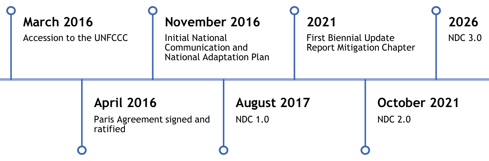
This document serves three purposes at once: it is SoP’s contribution under the Paris Agreement, communicated in the form the Convention requires with the information necessary for clarity, transparency and understanding provided in full; it is a national planning instrument, whose adaptation priorities rest on governorate-level vulnerability evidence, whose mitigation targets rest on a rebased inventory and long-range modeling, and whose every sectoral target carries the endorsement of the institution accountable for delivering it; and it is a platform for climate finance, built so that any ministry, authority, municipality or sector body can show that its need is identified, quantified, prioritized and nationally endorsed. Because SoP’s climate action depends on external support, technology, capacity and finance requirements are a substantive output of the analysis, and because every contribution is conditional on that support, SoP carries a corresponding obligation to account for what it receives and to demonstrate what it delivers, which is what the transparency arrangements exist to do.
The document proceeds accordingly. Chapters 2 through 6 establish what has changed since the previous contribution, the national circumstances and climate evidence, the principles that govern the contributions, the enabling environment within which they will be delivered, and the governance under which this contribution was developed and validated. Chapters 7 through 9 present the adaptation and mitigation contributions and the co-benefits that connect them. Chapters 10 through 12 set out the means of implementation, the transparency arrangements, and the contributions on climate empowerment and sustainable development alignment. The adaptation component of this contribution will be designated as SoP’s adaptation communication under Article 7, paragraphs 10 and 11, of the Paris Agreement. Chapter 13 consolidates the information required for clarity, transparency and understanding.
SoP puts forward, as its contribution, a national emissions level of 8,706.6 ktCO2e in 2035 under the Status Quo pathway, which assumes prevailing structural conditions persist, and 9,185.1 ktCO2e under the Independence pathway, which assumes those conditions end, 12.8 and 15.1 percent below business as usual in the NDC target year. Both contribution levels sit above the emissions observed since the onset of the aggression: the contribution is recovery held below its own counterfactual, not reduction from a war-suppressed base. At the extended target of 2040, set to align with the NDC 2.0 target year and with the horizons of national sectoral strategies, the contribution levels of 8,979.0 and 10,238.0 ktCO2e sit approximately 32 and 38 percent below the levels the second contribution implied for the same year, over a broader analytical scope. These contributions are put forward from a national position materially weaker than the one that produced NDC 2.0 in October 2021, and on percentage below business as usual the figures are of the same order as NDC 2.0’s under Status Quo and below them under Independence; the two cycles differ in base year, inventory boundary and target year, so the percentage comparison is not like for like, and progression stands on the absolute levels of the contribution. What moved is the reference case, not the intent. NDC 2.0 measured against a projection roughly half again the size of the current one, built on growth that did not occur, industrial capacity that was never built, and an accounting boundary that counted emissions produced outside SoP. Progression is therefore demonstrated on the absolute level put forward, on scope and coverage, and on time frame, and section 2.2 sets out each.
|
Element |
NDC 2.0 |
NDC 3.0 |
|
Base year |
2011 |
2022 |
|
Base year emissions |
3,226.3 ktCO2e |
6,114.92 ktCO2e |
|
Inventory boundary |
Imported electricity included at the Israeli emission factor |
IPCC territorial, category-based |
|
Scenario architecture |
Status Quo and Independence scenarios |
Four modeled pathways: BAU and NDC3, each under Status Quo and Independence, with Gaza reconstruction as an analytical axis within them |
|
Target years |
2040 |
2035 NDC target year; 2040 extended target year aligned with national plans and sectoral strategies |
|
Mitigation options assessed |
37 committed actions |
72 technology and policy options scored against six weighted criteria; water added as an explicit mitigation sector |
|
Adaptation coverage |
12 highly vulnerable NAP sectors |
12 sectors assessed, with risk and vulnerability scored across all 16 governorates and targets set under both scenarios |
|
Conditionality |
Fully conditional |
Fully conditional, attached to the target and grounded in CBDR-RC |
Progression under Article 4.3 is demonstrated on three fronts together. The absolute level of the contribution falls to roughly two-thirds of what the previous contribution implied, 32 percent lower than it for the one year both cycles cover, and the table below carries those quantities. Scope and coverage widen at the same time, with 72 scored technology and policy options against 37 committed actions, water added as an explicit mitigation sector, adaptation evidence extended to risk and vulnerability scoring across all sixteen governorates, and non-GHG indicators introduced across all sectors. And the time frame tightens, setting a 2035 target where NDC 2.0 stated none and therefore carrying five fewer years of abatement in its headline figure. The two cycles differ in base year, inventory boundary and target year, so the percentages below are read with their basis alongside them; the accounting treatment follows in section 2.3, and the fairness and ambition case is made in Chapter 4 and section 8.4.
|
Measure |
NDC 2.0 |
NDC 3.0 |
Basis |
|
Reduction below BAU, 2035 |
none stated |
12.8% (SQU), 15.1% (IND) |
NDC target year; 2022 base; territorial boundary |
|
Reduction below BAU, 2040 |
17.5% (SQU), 26.6% (IND) |
17.1% (SQU), 19.1% (IND) |
Only shared year; NDC 2.0 on a 2011 base including imported electricity |
|
Absolute level, 2040 ~13,140 ktCO2e (SQU)/ ~16,510 ktCO2e (IND) (implied) |
8,979.0 ktCO2e (SQU)/ 10,238.0 ktCO2e (IND) |
Contribution level against implied level |
The single most consequential methodological change since NDC 2.0 is the treatment of imported electricity. Approximately 88 percent of SoP’s electricity supply comes from the Israeli occupation, and NDC 2.0 counted the emissions of that generation inside SoP’s accounting boundary, applying the Israeli emission factor. On the present inventory that component is of the order of 4.5 MtCO2e, equivalent to roughly 70 percent of the territorial national total on the modelled 2022 base. Carried forward under the growth assumptions NDC 2.0 used, it accounts for the large majority of the divergence between the two business as usual references. NDC 3.0 follows IPCC category-based territorial accounting rather than a scope 1, 2 and 3 categorization.
What changes is where generation emissions are recorded, not whether they are counted: under IPCC category-based territorial reporting they are recorded in the inventory of the country where generation occurs, so imported electricity carries no generation emissions in SoP’s territorial inventory, while domestic generation is recorded under Energy Industries, at 455.89 ktCO2e in the 2022 base year. Imports predominate in the opening years of the projection period and are recorded in the inventory of the country of generation; from 2030, Energy Industries emissions enter the national account as the domestic generation buildout proceeds and displaces imported supply. The same boundary is applied in the LEAP projections, so the reference point and the pathways rest on one method; the full inventory and methods treatment is in section 8.1.
Decision 4/CMA.1 Annex II, paragraph 3(b), provides that Parties strive to include all categories and, once a source is included, continue to include it. The treatment of imported electricity is a technical change of the kind paragraph 2(d) contemplates, an improvement in accuracy that maintains methodological consistency, and it does not remove the emissions from global accounting: they are recorded in the inventory of the country where generation occurs. The same boundary governs the base year, both reference cases and both target years, so the consistency required by paragraph 2(a) holds across the contribution. The categories below fall outside the NDC 3.0 accounting boundary, with the explanation required under paragraph 4.
|
Excluded category |
Status |
Explanation |
|
Emissions from imported electricity |
Included in NDC 2.0, excluded in NDC 3.0 |
Attributed to the country of generation under IPCC territorial, category-based accounting. Reported under Annex II para 2(e) and justified as an accuracy improvement under para 2(d)(ii). |
|
IPPU in the base year |
Recorded as not estimated in the 2022 national inventory |
No national activity data exist for industrial processes; the inventory records the category as NE. IPPU enters the pathway projections from 2026, and the asymmetry is stated rather than netted out. |
|
HFCs, PFCs, SF6, NF3 |
Not estimated |
The national inventory covers CO2, CH4 and N2O; activity data on fluorinated gas consumption are not compiled nationally. Gas coverage is unchanged from NDC 2.0. |
A back-calculated national blended grid emission factor exists for entities computing their own indirect emissions. It is not applied to any figure in this contribution.
Priorities have not shifted since 2015; delivery against them has, and the continuity holds for adaptation and mitigation alike. Every sector prioritized in the NAP and carried through NDC 2.0 sits within the sectors assessed for NDC 3.0, and coverage widens rather than narrows on both sides of the contribution: mitigation moves from committed actions to a scored and endorsed option set, and adaptation moves from sectoral priorities to targets set under both scenarios, grounded in vulnerability evidence across all sixteen governorates and drawing on the commitments of NDC 2.0, the priorities of the NAP, and new options identified through the national vulnerability assessment and working group consultation. NDC 3.0 does not replace the priorities of the previous cycle; it builds on them, deepens the evidence beneath them, and extends them where the assessment shows new need.
Delivery under NDC 2.0 was uneven rather than absent, with renewable electricity the strongest area and monitoring the weakest, and the full account sits in the National Stocktake. Most of the distance between plan and delivery has two causes: no predictable climate finance at the scale the plans assumed, and the permitting, land access, movement and import restrictions imposed by the Israeli occupation, which section 5.1 sets out in full. NDC 3.0’s revised approach, endorsed targets, a standing reporting system, and a finance architecture built for direct access, follows from that experience.
The aggression on the Gaza Strip did not slow implementation there; it removed the assets that implementation had produced. Distributed rooftop solar, solarized public facilities, operating wastewater treatment plants and broad waste collection coverage were the measurable NDC 2.0 achievements in the Strip. The Gaza Power Plant has been non-operational since the onset of the aggression, the wastewater treatment plants are non-functional with untreated discharge resumed, and access to the sanitary landfills has been cut. The final Rapid Damage and Needs Assessment of April 2026 places cumulative physical damage at USD 35.2 billion, with economic losses of USD 22.7 billion.
Mitigation and adaptation targets for the Gaza Strip are therefore set as a green reconstruction program from a near-zero starting point, not as a continuation of prior work. The baseline before the aggression on the Gaza Strip began no longer describes anything that exists, so vulnerability in the Gaza Strip is assessed against a reference after that date. The productive base that NDC 2.0 projected forward is a substantial part of what was destroyed, and the reference case against which this contribution is measured sits far below the one NDC 2.0 used for the same reason. The data systems that would document any of this are among the losses, and the transparency arrangements in Chapter 11 are built for that condition.
SoP’s national circumstances set the boundary of what this contribution can put forward. This chapter establishes the physical, political, economic and demographic context in which climate action takes place, and the climate risk and vulnerability evidence on which the adaptation priorities rest.
The conditions in which this contribution will be implemented have moved against SoP since NDC 2.0 was submitted, in three measurable respects.
The Israeli occupation fragments a single national territory. The West Bank, including Occupied East Jerusalem, and the Gaza Strip are held apart by movement and access controls the occupation imposes, and within the West Bank a zoning regime places the majority of the land area outside Palestinian planning and permitting control. Planning and delivery are therefore organized under access conditions SoP does not set, across sixteen governorates of very different physical character.
At the same time, the economy expected to carry any domestic share of climate action lost more than a quarter of its output in a single year, unemployment exceeded 50 percent nationally, and domestic public spending on climate action stands below 1.5 percent of GDP, so there is no domestic fiscal envelope of the scale this contribution requires; the quantities are set out in section 3.1.4. And the aggression on the Gaza Strip did not delay the national baseline but replaced it: the population this contribution serves in the Strip is smaller, displaced, and differently distributed than the population the previous contribution was designed around, with the damage record set out in section 3.1.5.
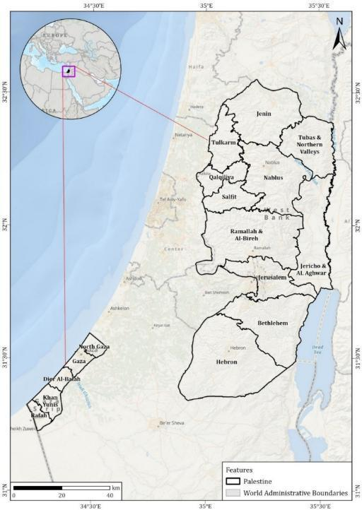
Together these establish that SoP’s implementing capacity in 2026 sits materially below its capacity in 2021. The structural mechanisms by which the occupation produces these conditions are set out once, in section 5.1, and the percentage comparison between the two contribution cycles does not hold on a like-for- like basis partly for this reason.
The physical asymmetry between the two parts of the territory is large enough that a single national adaptation or mitigation measure will rarely fit both. The West Bank is a highland and rift-valley territory of 5,660 km²; the Gaza Strip is a coastal plain of 365 km², roughly 41 km long and 6 to 12 km wide, with elevations generally between 0 and 100 m above sea level.
Together they comprise 6,025 km². The assessment throughout this contribution follows the 4 June 1967 reference: areas beyond the 1967 line are excluded, and the West Bank shore of the Dead Sea is included.
Summer temperatures average 28°C to 33°C, with extremes exceeding 40°C in the Jordan Valley and the southern governorates. Rainfall in both parts of the territory is highly variable in space and increasingly uncertain between years, so the governorate is used throughout this contribution as the unit of climate analysis rather than a national average. The sixteen governorates differ by more than an order of magnitude in size, from Hebron at 1,000.14 km² to Deir Al Balah at 56.70 km².
|
Feature |
West Bank, including Occupied East Jerusalem |
Gaza Strip |
|
Land area |
5,660 km² |
365 km² |
|
Governorates |
11 |
5 |
|
Terrain |
central highlands rising above 1,000 m, semi-arid eastern slopes and rift valley |
low-lying coastal plain, sandy soils, 0 to 100 m |
|
Long-term average annual rainfall |
about 454 mm; 400 to 700 mm in the central highlands |
372 mm |
|
Principal groundwater resource |
three mountain aquifers: Western, North-Eastern, Eastern |
Coastal Aquifer |
|
Groundwater condition |
main national source of freshwater more than 95 percent unsuitable for human consumption without treatment |
Within the West Bank, land is classified under the Oslo II Interim Agreement into Areas A, B and C. SoP refers to that framework, as per international law and bilateral agreements, and to those areas for technical and analytical purposes only: they are the units in which planning and permitting control is exercised and in which the vulnerability evidence is assembled. That reference in no way constitutes acceptance of the classification as a political reality. Under the Oslo interim arrangements SoP was to assume full control and sovereignty over its land, resources and borders within five years, and the position of SoP is that this remains its right.
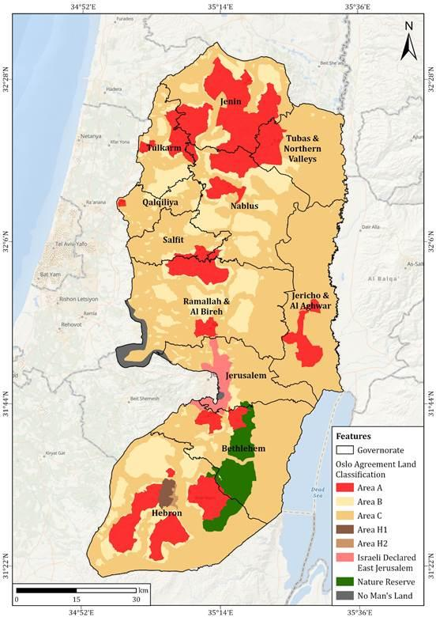
Population pressure is concentrated where physical and service capacity is lowest. The estimated national population reached 5.56 million at the end of 2025: 3.43 million in the West Bank and 2.13 million in the Gaza Strip, where the population fell by about 254 thousand, 10.6 percent, in a single year as a result of the aggression, and where children under the age of eighteen, nearly one million, make up 44 percent of the population (PCBS, Palestinians at the End of 2025). The pressure on land, water, energy and urban infrastructure is exceptional, and the aggression on the Gaza Strip has deepened it by destroying the housing and services the population depends on.
The demographic structure carries three features that shape climate exposure, and each is treated in this contribution as a planning variable.
A young population, with unemployment concentrated among youth and women, so that the labor force most exposed to climate-sensitive and informal work is also the least able to absorb income interruption during heat waves, floods or closures.
A large displaced population in the Gaza Strip. Nearly 1.9 million people have been internally displaced, many repeatedly, and over 1.2 million people, about 60 percent of the population, have lost their homes per the April 2026 Rapid Damage and Needs Assessment. Displacement determines climate exposure directly: displaced households have no fixed service connection, no secure water storage and no control over shelter thermal performance.
By end-December 2025, 70,942 Palestinians had been martyred in the Gaza Strip, including
18,592 children and about 12,400 women, with about 11,000 missing and 171,195 injured, and more than 100,000 had left the Strip; in the West Bank, 1,102 were martyred and 9,034 injured by occupation forces and settlers (Ministry of Health figures, via PCBS).
Since January 2025, more than 34,000 Palestine Refugees remain forcibly displaced from Tulkarm, Nur Shams, and Jenin camps4. The aggression alters the age and household structure of the affected governorates.
These are protected populations under international humanitarian law and under international human rights law, and the unaccompanied children carry the further protections owed to children specifically. Adaptation planning under this contribution therefore addresses a population whose exposure to climate hazard compounds an existing deficit in the protection of life, shelter, water and health.
Women, children, older persons, persons with disabilities, displaced households and women- headed households experience these conditions through different pathways, and the adaptation measures in Chapter 7 and the empowerment measures in Chapter 12 are disaggregated accordingly.
SoP holds full international climate obligations over territory in which it does not hold full administrative control, and this asymmetry, rather than any deficiency in national arrangements, is the governing fact for implementation.
The Environment Quality Authority (EQA) is the national focal point to the UNFCCC, the national designated authority for the Green Climate Fund, and the designated authority for the Adaptation Fund. EQA leads climate policy, reporting and international engagement, supported by the National Climate Change Committee as the inter-ministerial coordination platform and by the Palestinian Central Bureau of Statistics for the national greenhouse gas inventory. The institutional architecture is set out in Chapter 6.
The constraints that follow from this asymmetry, Israeli planning and permitting authority over most of the West Bank, restriction of movement and access, and the territorial limits on what can be measured, are set out once in section 5.1. This section supplies the quantified context in which they operate.
The quantities below are the basis on which every contribution in this document is conditional.
|
Indicator |
Value |
|
GDP, 2024 |
approximately USD 13.71 billion |
|
GDP per capita, 2024 |
around USD 2,592 |
|
GDP contraction, 2024 |
more than 26 percent |
|
Unemployment, 2024, national |
more than 50 percent |
|
Unemployment, 2024, West Bank |
about 35 percent |
|
Unemployment, 2024, Gaza Strip |
80 percent |
|
Unemployment, 2022, national, comparator before the aggression on the Gaza Strip began |
around 24.4 percent |
The speed of the change matters: national unemployment roughly doubled between 2022 and 2024, and the West Bank and Gaza Strip figures diverge by a factor of more than two, so a national average conceals two different labor markets. What these quantities exclude matters more. An economy of this size, contracting at this rate, cannot generate a climate investment envelope at the scale the sectoral pathways require, whatever the level of national ambition or the quality of sectoral planning. By the end of 2024, GDP per capita had regressed to approximately its 2003 level, erasing two decades of development progress.6 The Gaza Strip’s contribution to national GDP fell from 17 percent before the aggression on the Gaza Strip began to less than 4 percent, while the Strip holds more than 40 percent of the national population.7 The binding constraint is confirmed external finance. Israel, the Occupying Power, withholds Palestinian clearance revenue at escalating scale: monthly deductions rose from about NIS 200 million before the aggression on the Gaza Strip began to more than NIS 460 million in the first half of 2025, transfers have been halted entirely since May 20258, and by February 2026 around 70 percent of revenues were being seized, with accumulated arrears of approximately USD 4.26 billion on World Bank reporting to the Ad Hoc Liaison Committee, reducing fiscal capacity further.
The economy is also structurally exposed in ways that compound climate risk. It is small, import- dependent, and constrained by the movement and access restrictions imposed by the Israeli occupation, so climate shocks arrive through price volatility and supply interruption as well as through direct physical damage.
Baselines drawn before the aggression on the Gaza Strip no longer describe the territory, and this is a measurement finding. Sectoral conditions that shaped vulnerability before the aggression on the Gaza Strip began do not reflect the conditions that emerged afterwards, so the vulnerability assessment underpinning Chapter 7 treats the Gaza Strip since the onset of the aggression as a separate analytical scenario rather than as a continuation of the earlier series. The recorded condition, per the assessments named, is as follows.
|
Domain |
Recorded condition |
|
Physical damage |
USD 35.2 billion in damages and USD 22.7 billion in economic losses (RDNA, April 2026) |
|
Housing |
76.6 percent of housing units directly affected and 84.6 percent of those destroyed; over 1.2 million people, about 60 percent of the population, without homes (RDNA, April 2026) |
|
Displacement |
more than 1.9 million people internally displaced9 |
|
Agriculture |
more than 95 percent of agricultural infrastructure and 96 percent of cropland damaged and rendered inaccessible (RDNA, April 2026) |
|
Health |
fewer than half of hospitals and under 38 percent of primary healthcare centers even partially functional (RDNA, April 2026) |
Climate assets delivered under NDC 2.0 have been destroyed, so this cycle begins below where the last one ended. Climate-relevant assets already financed and delivered, including solar systems, water reuse facilities, agricultural assets and wastewater installations, were damaged or destroyed, and those losses were not captured as climate-related loss and damage. The final Rapid Damage and Needs Assessment of April 2026 places total recovery and reconstruction needs at USD 71.4 billion10, and rebuilding at that scale falls inside the period this contribution covers.
The embodied carbon of the materials themselves is attributed to the country of manufacture under territorial accounting and therefore sits outside SoP’s baseline and projections. What falls inside them is the choice of what is rebuilt: the energy performance of reconstructed buildings, the generation that supplies them, the water and waste systems restored alongside them, and the transport patterns they fix in place for decades. Reconstruction is consequently the largest single opportunity to shape SoP’s emissions trajectory and adaptation position over the NDC period, and green reconstruction is carried through the pathway architecture in Chapter 4 and the mitigation contribution in section 8.5 as a climate principle.
The climate hazard is imposed and worsening; the vulnerability it meets is made. Warming is observed across every governorate, and temperature and evaporative demand rise while rainfall declines under both plausible futures, which differ in magnitude rather than direction. Which future arrives is determined outside SoP.
Vulnerability does not follow the hazard. The West Bank units carrying the highest composite vulnerability are not those carrying the strongest climate signal, and in the Gaza Strip vulnerability rose across every governorate since the onset of the aggression without any change in the hazard acting on them. The aggression on the Gaza Strip did not make the climate worse. It removed the housing, water and sanitation systems, health facilities, energy networks, roads and livelihoods through which people absorb a climate they were already struggling with. Vulnerability is produced where the Israeli occupation constrains the capacity to respond, not where the climate signal is strongest.
These findings set the priority order of this contribution: the hazard is imposed, the vulnerability differential is made by what the occupation prevents people from building, and adaptation is therefore the principal response.
Warming is territory-wide, water-related stress is intensifying, and the strongest observed signals cluster in the eastern corridor. National mean temperature ranged between 19.2°C and 21.3°C over 2000 to 2025, and the record shows a clear, sustained rise: the first half of the record, 2000 to 2012, averaged approximately 19.7°C and the second half, 2013 to 2025, approximately 20.3°C, a shift of roughly 0.6°C between the two halves alone, with a fitted trend of about 0.05°C per year. 2010 is the warmest year on record at 21.3°C and 2011 the coolest at 19.2°C; from 2013 onward, years above 20°C become the norm rather than the exception, and across 2021 to 2025 every year but 2022 closes above 20.5°C.
Effective winter rainfall, the primary source of groundwater recharge, is declining and arriving in shorter, more concentrated seasons separated by longer dry spells. Land surface temperature has risen through both day and night, vegetation productivity has fallen in semi-arid zones, and rising evapotranspiration is widening the gap between rainfall input and crop water requirements.
Mean temperature, the indicator treated as the primary signal of the warming trend, carries the same picture at governorate level across the same 26-year reanalysis record. West Bank mean temperatures track elevation and topography closely, spanning roughly 17.8°C in the coolest highland readings to 23.4°C in the Jordan Valley: Jericho and Al Aghwar averages around 22.1°C and rarely falls below 21.3°C, Tubas and Northern Valleys follows at about 20.8°C, while Nablus, Ramallah and Al Bireh, and Hebron remain the coolest governorates throughout. At the Oslo area level, Area rendered as C reads warmest on average at 20.1°C because so much of it falls within the hottest parts of the territory. In the Gaza Strip the record shows the same territory-wide warming, and mean temperatures rose in every governorate between 2022 and 2025, from a Strip- wide average of about 20.7°C to about 21.5°C. Those are observed reanalysis values over three years, not a climate trend, and their significance is where they land: on a population whose housing, services and coping capacity the aggression on the Gaza Strip has removed, so that a modest rise in temperature arrives with none of the buffers that absorbed it before the aggression on the Gaza Strip began.
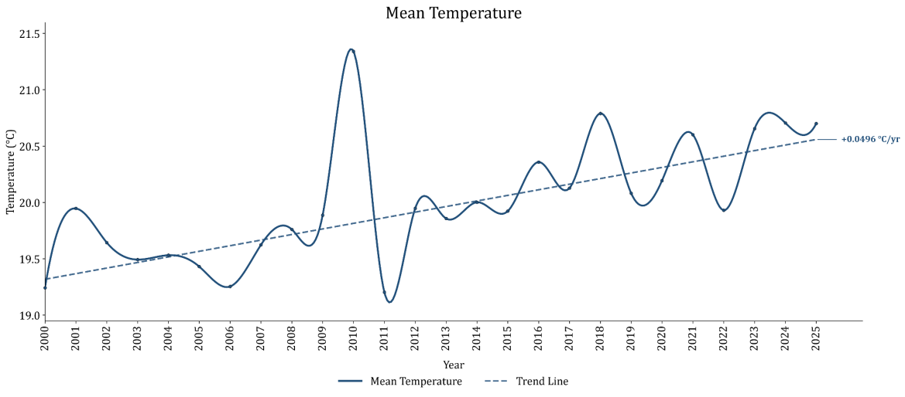
Direction is settled across both climate scenarios assessed, the intermediate SSP2-4.5 and the high- emission SSP5-8.5; only magnitude and timing differ. These climate scenarios are distinct from the national Status Quo and Independence pathways, which describe structural conditions rather than emissions futures. Projections run from 2026 to 2100 against a 2025 baseline, using bias-corrected and downscaled NASA NEX-GDDP-CMIP6 outputs from the GFDL-ESM4 model. The intermediate pathway (SSP2-4.5) corresponds to about 2.7°C of global mean warming by 2100 and the high pathway (SSP5-8.5) to about 4.4°C.
|
Variable, change against 2025 |
SSP2-4.5 by 2050 |
SSP2-4.5 by 2100 |
SSP5-8.5 by 2050 |
SSP5-8.5 by 2100 |
|
Annual mean temperature |
+1.5 to +2.5°C +2.5 to +3.5°C |
+2.5 to +3.5°C |
+4.0 to +5.5°C |
|
|
Days above 40°C per year |
+5 to +15 days in the Jordan Valley corridor |
+15 to +30 days |
+15 to +30 days |
+50 to +90 days, concentrated in the eastern corridor |
|
Annual rainfall |
-3 to -6% |
-6 to -10% |
-6 to -10% |
-15 to -25%, steepest in the southern West Bank and the Gaza Strip |
|
Potential evapotranspirati on |
+10 to +15% |
+15 to +25% |
+15 to +25% |
+25 to +40% |
|
Relative humidity |
-0.5 to -1 percentage point |
-1 to -2 percentage points |
-1 to -2 percentage points |
-2 to -4 percentage points |
On mean temperature specifically, the two climate scenarios tell one story to mid-century and two beyond it. Under the intermediate SSP2-4.5 scenario, national Tmean rises from approximately 21.1°C over 2026 to 2045 to about 21.6°C at mid-century and roughly 22.1°C late in the century, a fitted warming rate of about 0.02°C per year, slower than the roughly 0.05°C per year already recorded historically. Under the high-emission SSP5-8.5 scenario the trajectory is markedly steeper: about 21.4°C in the early period, 22.1°C by mid-century and approximately 23.7°C late in the century, reaching 25.3°C in 2098, a fitted rate of about 0.05°C per year sustained for 75 years. By 2050 the two scenarios are nearly indistinguishable, 21.55°C against 21.64°C, 0.85°C and 0.94°C above the 2025 baseline; by 2100 they diverge sharply, 22.59°C against 24.84°C, 1.89°C against 4.14°C above the baseline, more than double the intermediate scenario’s rise. Table 7 states the corresponding changes by variable, and governorate movements reach 1.8°C at mid- century and 2.9°C at end of century in the most exposed West Bank governorates under SSP2-4.5, with Bethlehem and Jerusalem among the largest movers, and the high pathway deepens every figure.
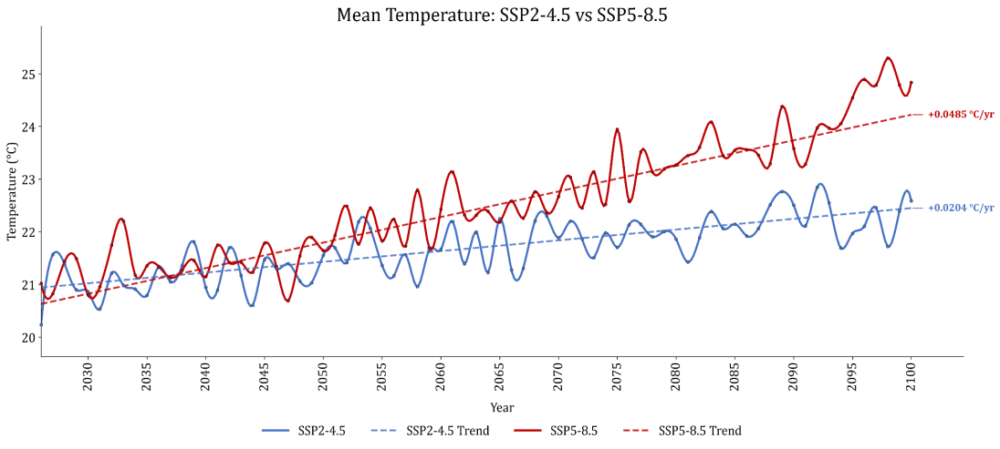
The Eastern Mediterranean warms faster than the global average, and Mediterranean rainfall falls by approximately 4 percent for every 1°C of global warming, with the steepest reductions in the southern and eastern Mediterranean. SoP sits in that quadrant. Declining winter rainfall and rising evaporative demand together, rather than either alone, drive the projected intensification of drought and the loss of groundwater recharge across both parts of the territory.
Hazard concentrates in the same places under every scenario and horizon, and those places anchor adaptation geography whichever pathway materializes. In the West Bank, Jericho and Al Aghwar holds first rank throughout the projections. By 2100, Bethlehem and Hebron emerge as second and third under the intermediate pathway, both Very High, extending the high-hazard zone from the eastern corridor into the southern West Bank. In the Gaza Strip, the Gaza and North Gaza governorates remain High under both pathways at both horizons, a concentration that does not ease even on the lower trajectory.
The vulnerability findings of this contribution rest on the national Climate Change Vulnerability Assessment, which covers all sixteen governorates across twelve climate-sensitive sectors on 274 indicators, classified under the IPCC framework of hazard, exposure, sensitivity, and adaptive capacity. Indicators are weighted through the Analytical Hierarchy Process and classified into six vulnerability bands, with gender equality and social inclusion applied as a cross-cutting lens throughout11. The assessment included primary data collected from sectoral line ministries and vulnerable groups including women, children, youth, displaced people, people with disabilities, and representatives from Gaza Strip12.
Vulnerability tracks the structure of local livelihoods and the reach of local institutions, not the intensity of the climate signal. On present-day climate vulnerability alone, Salfit ranks first of the eleven West Bank governorates at Very High, driven by dependence on agriculture and ecosystem productivity, and Deir al Balah ranks first of the five Gaza governorates at High. Neither is a leading hazard governorate. Adaptive capacity varies more within governorates than between them, so the composite index is reported for the West Bank at the Oslo Area level: where the Israeli occupation controls planning, permitting and land use across the majority of the West Bank (section 5.1), the Oslo boundary is the line along which the capacity to build, drill, connect and repair actually varies. The index integrates sensitivity, adaptive capacity, exposure and hazard across all sixteen governorates.
Every Gaza governorate moved upward on composite vulnerability and four of the five on composite risk, and the movement is attributable to the collapse of adaptive capacity, not to any change in hazard. Each driver of that movement removes a service pathway through which climate stress is normally absorbed; the damage record itself is stated once, in section 3.1.5, and is not restated here.
|
Driver |
Service pathway removed |
|
Destruction of health facilities and medical services |
Treatment of heat stress, water-borne and vector-borne illness |
|
Damage to water, desalination facilities, sanitation and wastewater infrastructure for collection and treatment |
Safe water supply and sanitation under drought and flood |
|
Damage to the solid waste management system, including collection and sanitary landfill disposal |
Service continuity of solid waste collection and safe disposal |
|
Damage to schools, public buildings and municipal services |
Shelter, cooling and municipal emergency response |
|
Large-scale housing destruction |
Thermal protection and secure shelter |
|
Loss of employment and economic activity |
Household capacity to absorb price and supply shocks |
|
Debris accumulation and dependence on temporary shelter |
Safe movement and habitable living conditions |
|
Rising food insecurity and acute malnutrition |
Physiological resilience to heat and disease |
Every target, cost and condition in this document follows from the propositions established in this chapter: equity under common but differentiated responsibilities, adaptation as the overriding national priority, ambition measured by delivery under deteriorating conditions, and a genuinely bifurcated future.
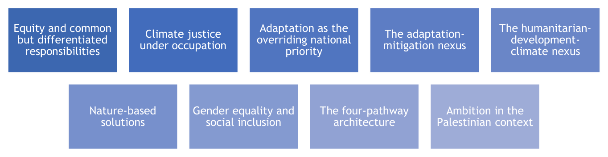
SoP submits this contribution as a State Party to the UNFCCC and the Paris Agreement and a non- Annex I developing country Party, and applies the principle at two levels. Globally, a small number of countries are responsible for most emissions and are best placed to support, through finance, technology transfer and capacity building, those that have contributed little yet bear a disproportionate share of the burden. That obligation is treaty law: Article 3.1 of the Convention, in force since 1992, places the leading role with developed country Parties, and Articles 4.3 to 4.5 commit them to provide the financial resources, technology transfer and capacity building on which developing country implementation depends. That entitlement attaches to every developing country Party irrespective of its particular circumstances, and Article 4.7 makes the extent of developing country implementation contingent on its delivery; the circumstances set out in this contribution determine the scale and urgency of Palestine's needs, not its eligibility. The International Court of Justice (ICJ) has confirmed that these are binding obligations, not aspirations. In its unanimous Advisory Opinion of 23 July 2025 on the obligations of States in respect of climate change, the Court recognized "the urgent and existential threat posed by climate change," held that the climate treaties and customary international law impose legally binding duties whose standard is the highest possible ambition and due diligence, and confirmed that breach carries legal consequences, including cessation and full reparation for injured States13. Nationally, measures are implemented on a basis of equity, ensuring equal and equitable protection of women, children, elderly people, individuals with disabilities, the poor and other groups exposed to compounded risk.
SoP remains committed to an emissions pathway consistent with the objective of the UNFCCC and the Paris Agreement, to hold the increase in global average temperature to well below 2°C above pre-industrial levels and to pursue efforts to limit the increase to 1.5°C. Equity determines the form of that contribution; it does not qualify its contribution.
Conditionality is a structural fact of Palestinian climate action, and it is stated here as such. The contribution covers the Occupied Palestinian Territory, the West Bank including Occupied East Jerusalem and the Gaza Strip, on the 4 June 1967 reference, where the Oslo II Interim Agreement of 1995 further divides the West Bank into the so-called Areas A, B and C. The occupation removes the fiscal, territorial, and institutional capacity that would make targets deliverable from national resources; how it does so is set out in section 5.1. Domestic public finance for climate action stands at less than 1.5 percent of GDP, a level at which no sectoral target in this document is deliverable without international support.
Climate justice means putting equity and human rights at the core of decision-making and action on climate change. Climate justice under occupation is a question of rights before it is a question of finance. The conditions this contribution plans within are governed by international humanitarian law and by human rights obligations, including the rights of the child, and their climate consequences fall hardest where protection is weakest: displaced households and those dependent on humanitarian supply for water, energy and food. Rights enter through adaptation priorities and inclusion criteria, not as context.
The consequences bind the rest of the document. All contributions across mitigation, adaptation, finance, technology transfer, and capacity building are conditional, with no conditional and unconditional split at national or sector level. Domestic co-financing exists and is reported, but is not sufficient to make any target deliverable, so conditionality attaches to the target rather than to the funding source. An unconditional component would arise under the Independence pathway, once the structural constraint is removed, and would be communicated through a successive contribution. The means of implementation are likewise a claim grounded in CBDR-RC, not a wish list appended to a technical document.
Adaptation is where Palestinian climate action is most consequential, and this contribution is weighted accordingly. Climate impacts on water, agriculture, health, ecosystems, energy access, and infrastructure pose immediate risks to well-being and development, and adaptive capacity has been reduced by protracted restrictions and by the aggression on the Gaza Strip.
Adaptation priorities are therefore concentrated rather than expanded: anchored in the Climate Change Vulnerability Assessment and in national sectoral strategies, and built on the measures of previous cycles that remain relevant, redesigned where the realities of the West Bank and the Gaza Strip require it. A credible mitigation component remains essential under the Paris Agreement and for long-term sectoral development, but is calibrated to what national circumstances permit.
Under scarcity, no measure is affordable for a single benefit, so the two objectives are inseparable in selection rather than reconciled afterward. Mitigation designed without regard to climate risk may be maladapted or compound vulnerability elsewhere; well-designed mitigation is resilient and reduces vulnerability; adaptation may raise or lower emissions. Options are accordingly scored against both benefits: adaptation options that reduce emissions are favored, as are mitigation options that support adaptation, and where neither holds, options are selected so as not to drive maladaptation elsewhere. Sectors overlap substantially, particularly water, agriculture, energy, and health, and each intervention carries a clearly identified lead sector even where benefits accrue across several.
Reconstruction in the Gaza Strip is climate policy, and it is treated as such throughout this contribution. The protracted aggression on the Gaza Strip intensifies climate vulnerability, most sharply for women, girls, children, and marginalized groups, while restrictions, infrastructure damage, and service disruption deepen water and energy insecurity and raise protection risks in displacement. Integrating humanitarian need with development and climate resilience is what makes adaptation there targeted rather than provisional. Green and climate-resilient reconstruction is therefore a principle of this contribution, not a humanitarian afterthought: recovery that embeds renewable energy, efficiency, low-carbon construction, and integrated water, energy, and waste planning locks in decades of emissions and resilience outcomes as the assets are rebuilt.
Ecosystem measures earn their place in this contribution on combined value. Reforestation, rangeland restoration, and ecosystem rehabilitation sequester carbon while improving biodiversity, water regulation, and community resilience, so they are scored and reported for adaptation and mitigation together rather than assigned to one column. Sustainable land, soil, and water management follows the same logic and is the strongest convergence point between the two objectives.
Inclusion is an analytical requirement in this contribution, applied in how evidence is gathered and how options are scored, and reported in Chapter 12. Sex, age, and disability disaggregated data are integrated into sectoral monitoring templates and national reporting tools so that adaptation and mitigation indicators reflect differentiated exposure. Inclusive governance and gender- responsive budgeting carry this into institutional practice. Gender and social criteria also enter the feasibility screening of mitigation options, alongside institutional readiness, technology availability, and equitable access for vulnerable groups.
SoP’s emissions trajectory turns on conditions SoP does not set, so the scenario architecture reports both structural conditions against their own references. For accounting and tracking, the Status Quo target is the reference pathway, and Independence is communicated as the higher level of ambition achievable were structural conditions to change. The architecture separates policy ambition from structural conditions, and the structural condition is the occupation: whether it persists or ends. The divergence between what SoP intends and what its circumstances permit can therefore be read directly from the results. At 2035 the Status Quo pathway delivers 1,273.0 ktCO2e of abatement, 12.8 percent below its own reference, and the Independence pathway 1,635.7 ktCO2e, 15.1 percent below its own: higher absolute emissions under Independence, higher climate ambition, and larger potential GHG abatement. Modeling a pathway in which the occupation persists is not an endorsement of the situation it models. The position of SoP is that the occupation must end. The Status Quo pathway technically states what climate outcomes follow if occupation does not end, and it is reported for that reason alone, and should not in under any circumstances be understood as acceptance of the current state.
|
Business as usual |
NDC 3.0 transition pathway |
|
|
Status Quo |
The occupation persists, and with it dependence on electricity supplied by the Israeli occupation, Israeli-controlled planning and permitting, and restrictions on movement and imports, with no additional climate ambition |
Sectoral targets implemented under a continuing occupation, relying on efficiency, distributed renewables, and internationally supported interventions |
|
Independen ce |
The occupation ends. National control over territory, borders, energy supply and land use planning is restored, enabling higher industrial activity and infrastructure development, with no climate ambition beyond current trends. |
The same ambition under an ended occupation, enabling deeper system transformation, electrification, and decoupling |
Reconstruction of the Gaza Strip is an analytical axis within these four pathways, not a separate scenario set. Business as usual pathways assume conventional reconstruction; NDC pathways assume green reconstruction. Targets remain unified and national, with the Gaza Strip’s distinct planning reality carried through differentiated priorities. What the pathway assumptions carry is the emissions consequence of what is rebuilt: the energy performance of the reconstructed building stock, the generation that supplies it, and the water and waste systems restored alongside it.
Each horizon in the pathway results has a defined role. 2035 is the NDC target year, framed against the global 2035 NDC cycle, and the point at which this contribution is assessed. 2040 is the extended target year, set to align the contribution with national plans and sectoral strategies. 2030 is an interim milestone rather than a separate contribution, stemming from the short-term sectoral action plans and aligned with relief and reconstruction sequencing in the Gaza Strip. 2050 anchors the long-term vision of a climate-resilient, low-emission SoP; the indicative trajectory toward it is confirmed and deepened through successive contributions. Targets are stated and compared at 2035 and 2040; the 2030 and 2050 results are presented with the pathway discussion in Chapter 8.
Conventional practice reads ambition as a deeper percentage against a rising baseline. That reading assumes a State with territorial control, a functioning fiscal base, and a baseline that rises because the economy grows. None of those conditions holds in SoP in this cycle, and the Paris Agreement does not require them to: contributions are nationally determined, and the definition of ambition sits with the Party, subject to justification.
Emissions in the observed period are suppressed by destruction and by restriction, not by mitigation, and the pathways therefore rise as recovery, reconstruction and the return of population restore normal national life. This is the condition international practice describes as suppressed demand. Ambition in this contribution accordingly rests on the absolute emissions level put forward, on recovery held below its own counterfactual, on scope, coverage and the capacity to measure and report. The full fairness and ambition case, including the accounting case for progression under Article 4.3, is made in section 8.4.
What SoP is able to deliver is determined by two things: the constraints the Israeli occupation imposes on planning, resources, implementation and measurement, and the policy and institutional framework SoP has built within them. This chapter sets out both. The sectoral chapters rely on it.
The occupation determines what climate action is possible at every stage of the policy cycle, from what may be planned to whether what has been built survives.
The legal position is settled at the highest level. The International Court of Justice, in its Advisory Opinion of 19 July 2024, found the continued Israeli presence in the Occupied Palestinian Territory unlawful14, with obligations to end it as rapidly as possible, to cease settlement activity and to make reparation, and the United Nations General Assembly endorsed that finding in resolution ES- 10/24 of 18 September 202415. The constraints recorded in this section operate within that legal frame.
The binding constraint is imposed from outside the national institutions. Installed renewable capacity rose from 42 MW in 2016 to 293 MW in 2024, taking renewables to 7.1 percent of electricity supply, achieved within an electricity system SoP does not control. What the Israeli occupation withholds is land, permits, access and imports.
Nor was non-delivery under NDC 2.0 principally a financing failure. Measures designed, engineered and in several cases financed did not proceed for occupation block, land access, movement of goods or import clearance. That failure mode is distinct from an unfunded action and is treated separately.
And the constraint is not only prospective. The Israeli occupation has destroyed climate infrastructure delivered under earlier NDC cycles in the Gaza Strip, so this cycle starts below where NDC 2.0 left it.
|
Stage |
Constraint |
Consequence for NDC 3.0 |
|
Planning |
Most of the West Bank outside Palestinian planning jurisdiction; the two parts of the territory cannot be planned as one system |
Assessed need does not convert into buildable projects |
|
Resource access Groundwater, electricity and marine access under Israeli control |
Cost and emissions profile of the largest inputs set outside national control |
|
|
Implementation |
Permitting, import restrictions, movement and land access |
Designed and financed measures stall before construction |
|
Monitoring |
Fragmentation and restricted field access Data gaps follow access, not |
capacity |
|
Assets already built |
Destruction of delivered climate infrastructure in the Gaza Strip |
Prior investment lost, not recorded as climate loss and damage |
The Israeli occupation prevents SoP from planning its territory as a single system. Area rendered as C covers 61.85 percent of the West Bank, against 15.64 percent for Area rendered as A and 18.33 percent for Area rendered as B16, with the remaining approximately 4.18 percent comprising areas outside the A, B and C classification, including East Jerusalem, Hebron H2 and no-man's land, and remains under full Israeli control of land, planning and infrastructure decisions. Whether a community can build a water line, an irrigation structure or a solar installation is set by land control and permitting, not by assessed need. Palestinian planning has run ahead of Palestinian authority to build. Of 274 local outline plans prepared, 123 are for areas in which Palestinian institutions cannot authorize construction. Infrastructure recorded in the Jerusalem governorate is largely Israeli-built and Israeli-administered and is not Palestinian adaptive capacity. Climate staff cannot move between the West Bank, including Occupied East Jerusalem, and the Gaza Strip. National targets are therefore set for SoP as a whole while delivery is organized separately for each part of the territory, under different access conditions and different service baselines.
The Israeli occupation rations and prices the physical inputs to mitigation and adaptation alike. Restrictions on well drilling, water infrastructure and resource access in the areas under full Israeli control, and even in Areas A and B, constrain adaptive capacity in the West Bank water sector. In the Gaza Strip, more than 95 percent of Coastal Aquifer groundwater is unfit for human consumption without treatment, making desalination a precondition of basic supply and attaching an energy demand to an adaptation need.
Electricity is the clearest case. Approximately 88 percent of supply comes from the Israeli occupation, placing the cost and the emission factor of the largest energy input beyond any domestic measure. The constraint is long-standing: NDC 2.0 modeled the Gaza Power Plant at 50 percent of capacity because of a transmission constraint imposed by the Israeli occupation17, before the plant was put out of operation altogether. At sea, the Israeli occupation has cut the fishing area from the 20 nautical miles stipulated by the Oslo Agreement to 6, the ceiling on coastal and marine livelihood adaptation.18
Permitting, import restriction, movement control and land access are principal causes of non- delivery under NDC 2.0. A 1,300 tonne per day, 40 MW waste-to-energy facility at Zahret Al-Finjan is fully engineered and has not been built. It is held by two constraints together: the absence of climate finance at the scale the project requires, and the permitting and access control exercised by the Israeli occupation over the site and over the movement of equipment to it. No large-scale coastal breakwater was constructed; access restrictions and the aggression on the Gaza Strip prevented implementation. Import restrictions constrain access to low-emission and climate- resilient technologies, as do restrictions on the movement of goods and people and on control of international borders. In the Gaza Strip, the Israeli occupation has cut off access to the two sanitary landfills, so methane management is unavailable even as an emergency measure. Every sectoral pathway in Chapters 7 to 9 therefore carries a delivery risk that financing alone does not remove.
Data gaps are a function of access more than of capacity. No ground-based meteorological data was available for the Gaza Strip, so the climate record for the Strip rests on reanalysis and satellite products. Four sectors, Social, Economic, Livestock, and Coastal and Marine, could not be assessed at the Oslo area level because disaggregated data cannot be collected where access is controlled. Water access data does not separate Israeli-controlled from Palestinian-accessible infrastructure, so recorded adaptive capacity overstates what is usable. Rainfall monitoring depends on volunteer observation under security constraints, and remote sensing is required for the Gaza Strip and other restricted areas. The transparency arrangements are built for restricted access rather than assuming it away.
Delivery under previous NDC cycles has been physically reversed. What existed in the Gaza Strip before the genocidal war on the Gaza Strip, and what remains of it, is set out below.
|
Asset delivered under previous NDC cycles |
Position before the aggression on Gaza |
Position now |
|
Distributed rooftop solar |
25 to 30 MW installed |
Largely destroyed |
|
Solarized public facilities |
More than 150 facilities |
Largely destroyed |
|
Wastewater treatment |
Three plants treating more than 80 percent of wastewater |
Non-functional; untreated discharge of approximately 70,000 to 80,000 m3 per day resumed |
|
Municipal solar |
Operating in all 25 municipalities |
Largely destroyed |
|
Waste collection |
85 to 90 percent coverage Access to both sanitary landfills cut off, with waste collection vehicle fleet largely destroyed |
|
|
Gaza Power Plant |
Operating under a transmission constraint |
Non-operational since the onset of the aggression |
The capacities the Israeli occupation removes are not only technical. Water infrastructure that may not be built, groundwater unfit to drink, health services running on interrupted power and the destruction of water, sanitation and energy systems in the Gaza Strip bear on the rights to water and sanitation, to health, and to an adequate standard of living. They bear hardest on children, whose exposure runs through unsafe water, malnutrition, heat, disrupted schooling and displacement. International humanitarian law places the corresponding obligations on Israel, the Occupying Power, toward the civilian population and the infrastructure it depends on. Adaptation in water, health and sanitation is therefore a rights obligation as well as a climate measure.
All contributions in NDC 3.0 are conditional, and the constraint set out above is the reason. The equity basis and the form of that conditionality are established in Chapter 4. What this section adds is that the constraint is not divisible: a fully financed measure still requires the permit, the land, the import clearance and the access.
The binding constraint on delivery is not an absence of policy. Every sector carrying a material share of the national inventory or vulnerability burden is governed by an adopted law, strategy or plan, and those instruments have been maintained, in several cases extended, through the aggression on the Gaza Strip. What the framework does not yet carry is the connective layer that converts adopted policy into enforceable obligation: a legal mandate for climate reporting and data sharing, enforcement behind adopted standards, and a public finance system able to identify climate expenditure. These are specific and addressable improvements, carried as priorities in this contribution, not a general institutional deficiency.
The framework has also moved forward through the same period. The most consequential enabling steps since NDC 2.0 were taken during the aggression on the Gaza Strip, not before it: direct access to the Green Climate Fund, climate provisions drafted for a new Environmental Law, climate units inside local government, and a national climate data platform begun. The determining variables set out in section 5.1 stayed outside national control throughout; the enabling framework did not.
Coverage is broad and the planning cycle is active: the 2025–2027 strategic plans of the energy, water, agriculture and health institutions carry sectoral delivery through the opening years of the NDC period. These instruments are the operative basis for the sectoral targets in Chapters 7 & 8.
|
Domain |
Principal instruments in force |
Current cycle and direction |
|
Environment and biodiversity |
Environment Law No. 7 of 1999 and its amendment on the inclusion of climate change; National Biodiversity Strategy and Action Plan, 2022; Protected Areas Network Plan, 2022; The Cross- Sectoral Environment Strategy (2025–2027) |
Climate provisions prepared for a new Environmental Law will carry the Convention obligations the 1999 framework law predates; under review (section 5.2.2) |
|
Energy |
Electricity Law No. 12 of 1995; Energy Sector Strategic Plan 2025– 2027; National Energy Efficiency Action Plan 2020–2030; Renewable |
Current-cycle strategy in force; renewable deployment continues within an electricity supply and |
|
Energy Strategy, update to 2030 in progress |
transmission system under Israeli control (section 5.1) |
|
|
Water and wastewater |
Water Law; Palestine Water Strategy 2025–2027; treated wastewater reuse standards |
Current-cycle strategy in force; consistent enforcement of reuse standards is carried as a priority in section 5.2.3 |
|
Agriculture and food |
National Food and Nutrition Security Policy 2019–2030; National Agriculture Sector Strategy 2025– 2027 |
Current-cycle strategy in force; climate-resilient agriculture and dietary objectives integrated into sector planning |
|
Transport |
Transport Sector Implementation Plan, 2021; Low-Emission Mobility Plan, in preparation; National Transport Sector Strategy 2025–2027 |
Implementation plan adopted; the Low-Emission Mobility Plan will add the modal-shift instrument |
|
Health |
National Health Sector Strategic Plan 2025–2027; Health Adaptation Framework, 2022 |
Current-cycle strategy in force; the adaptation framework is adopted as its planning instrument |
|
Urban, buildings and spatial planning |
Green Building Guidelines, 2013; National Spatial Plan 2050; Local Government Strategic Plan 2025– 2027 |
Current-cycle strategy in force; consistent building code application is carried as a priority in section 5.2.3, within the territory where Palestinian planning and permitting authority applies (section 5.1) |
|
Climate reporting |
No national instrument in force; climate change articles prepared for the new Environmental Law (section 5.2.2) |
Reporting operates on institutional cooperation; a legal mandate is the first priority in section 5.2.3 |
The instruments are sectoral in origin and were not written against a national climate obligation; the harmonization and scheduled review priority in section 5.2.3 is what aligns them to the NDC targets. Where an instrument has passed its stated period, the 2025–2027 planning cycle and the updates in progress are the vehicle for renewal, and a standing review cycle replaces revision triggered by project financing.
Capacity building has been mainstreamed as a national enabler since accession, and successive readiness and support programs built the inventory, transparency and planning capabilities this contribution now deploys. Four capabilities changed hands during the period this contribution covers: direct access to climate finance, climate legislation, local-level climate capacity, and national climate data infrastructure. Each was secured while the genocidal war on the Gaza Strip continued, and each alters what SoP is able to do, not only what it intends.
In March 2026 the Green Climate Fund Board accredited the Municipal Development and Lending Fund as SoP’s first national direct access entity. Climate finance that previously required an international accredited entity can now be applied for and managed directly. The accredited mandate covers local infrastructure and services, so broadening direct access remains a priority carried in Chapter 10.
The EQA has prepared climate change articles for a new Environmental Law, now under review. The articles assign climate reporting and data-sharing obligations across government rather than concentrating them in one authority, and they open standing channels for municipalities, civil society and the private sector: the whole-of-government and whole-of-society basis that the 1999 framework law predates. Climate capacity now sits at the tier of government that holds the permitting mandate. Environmental and climate units are established across local government, municipalities operate geographic information systems, and climate risk is being integrated into the National Spatial Plan 2050.
A national platform to hold and process climate data is under development; the reporting architecture is set out in Chapter 11.
How SoP moves from adopted policy to delivered outcome turns on five improvements. Each is conditional on international support, on the grounds set out in Chapter 4.
|
Priority |
What it changes |
Lead |
|
Legal mandate for climate reporting and data sharing |
Moves reporting from cooperation to obligation, fixing frequency, data standards and escalation |
EQA, PCBS and MoFP with the Prime Minister’s Office and legal departments |
|
Enforcement behind adopted standards |
Applies building codes, climate-resilient road standards, reuse standards and environmental licensing consistently across the territory where Palestinian planning, permitting and licensing authority applies (section 5.1) |
MoLG, MoPWH, PWA, EQA |
|
Climate finance taxonomy, budget tagging and expenditure tracking |
Makes climate expenditure identifiable in the national budget, the precondition for reporting support received and for Chapter 10’s finance case |
MoFP and EQA |
|
Updating and Harmonization and scheduled review of policy instruments |
Aligns sectoral instruments to NDC 3.0 targets and replaces project-triggered revision with a standing review cycle |
EQA with sector leads |
|
Climate data governance, including a Meteorology Law |
Regulates access and mandates for meteorological and climate data and its integration into adaptation planning |
Palestinian Meteorological Department with EQA, MoT, MoA and PWA |
This chapter documents how this contribution was developed and by whom: the institutional architecture that produced it, the capacity that carries it between reporting cycles, and the engagement and validation through which it was confirmed. Arrangements for implementing the contributions are set out in the means of implementation.
The structure concentrates coordination in a single national authority, places technical authority with the institutions that hold the data and will deliver the measures, and ends endorsement in Cabinet. Each of these determines what SoP is able to put forward and what it is able to account for.
The EQA is the lead national coordinator, the technical authority for NDC 3.0 and the national point of contact to the UNFCCC and to the climate funds, including the Green Climate Fund, the Global Environment Facility and the Adaptation Fund: it chairs and convenes the national committees and the technical working groups, validates every sectoral input before national review, and submits the NDC.
Technical authority sits with the institutions that hold the data and will deliver the measures. Eight sector Technical Working Groups prepare and validate sectoral baselines, scenarios and measures before they reach the National Climate Change Committee.
Endorsement is graduated and ends in Cabinet: technical review, Steering Committee endorsement, National Climate Change Committee validation, and political and legal endorsement by the Council of Ministers, after which the EQA submits. Each sectoral target in this document therefore carries the formal endorsement of the ministry accountable for delivering it, secured before submission. A line ministry, a municipality or a utility can present its needs here to a climate fundas a national priority rather than a sectoral aspiration.
|
Body |
Role |
Composition |
Decides |
|
Council of Ministers |
Final national authority on the NDC |
Government of the State of Palestine |
Political and legal endorsement; alignment with national priorities |
|
National Climate Change Committee (NCCC) |
National validation body for cross-sector coherence |
Climate-mandated ministries, authorities and agencies convened by EQA, including the Ministry of Women's Affairs, with civil society and gender and social inclusion stakeholders, NGOs, private sector, and Academia |
Validation and no-objection across mitigation, adaptation, finance and MRV; completeness and feasibility |
|
Steering Committee, within the NCCC, convened for the NDC 3.0 development process |
Strategic direction and collective technical endorsement |
Chaired by EQA, Line ministries, and the executing agency |
Baseline year, time horizon and scenario architecture; narrative framing; target granularity; unified national presentation; depth of financing detail |
|
Environment Quality Authority (EQA) |
Lead coordinator, technical authority and UNFCCC focal point |
EQA, chairing and convening the NCCC and the technical working groups |
Methodological guidance and quality control; validation of baselines, scenarios and sectoral inputs; MRV design and ETF alignment; UNFCCC submission |
|
Sector Technical Working Groups (eight), convened for the NDC 3.0 development process |
Sector technical platforms, advisory rather than approving |
Sector focal points with line ministries, municipalities, utilities, academia, private sector bodies, women’s and youth organizations and civil society |
Recommend sector baselines, options, targets and indicators for NCCC review; no approval function |
|
Line ministries and sector authorities |
Data provision, assumption review, sectoral endorsement |
PENRA, PWA, MoT, MoA, MoLG, MoNE, MoH, MoI, MoTA |
Sector activity data; validation of modeling assumptions; feasibility of sector strategies; ministerial endorsement of sectoral plans, NDC implementation |
|
Ministry of Finance and Planning |
Fiscal and budgetary integration |
MoFP |
NDC alignment with the national budget cycle and national planning frameworks; development cooperation and reconstruction planning for the Gaza Strip; climate budget tagging and expenditure tracking; fiscal feasibility |
|
Palestinian Central Bureau of Statistics (PCBS) |
National data governance backbone |
PCBS |
Statistical standards and quality control of activity data; disaggregated data integration |
|
Palestinian Meteorological Department (PMD) |
Climate data authority |
PMD |
Climate datasets and projections; validation of climate assumptions; climate indicators for MRV |
|
Institutional focal points in the Gaza Strip |
Territorial coverage of the Gaza Strip within national governance |
Sector institutions in the Gaza Strip, working remotely with United Nations and humanitarian partners |
Sector data and assumptions for the Strip across water, energy, waste, agriculture and health |
|
International partners |
Support to the national process |
UNDP, other United Nations agencies, international financial institutions and bilateral partners |
No decision function; data on support delivered, verification assistance and donor coordination |
Coordination between these bodies runs along a decision line, a data line and an investment line, each on its own rhythm. The decision line is vertical and periodic. Sector inputs enter it through consolidation and quality assurance by the EQA, and it is that consolidated output the Steering Committee endorses and the National Climate Change Committee validates before Cabinet. Sectoral mitigation and adaptation plans carry ministerial endorsement before the national document is finalized, so that Cabinet approval confirms an already-owned position rather than creating one. The data line is horizontal and routine. A four-stage national data flow assigns standing obligations from generation through to reporting, set out in the figure below, converting coordination into a repeating institutional obligation between reporting cycles.
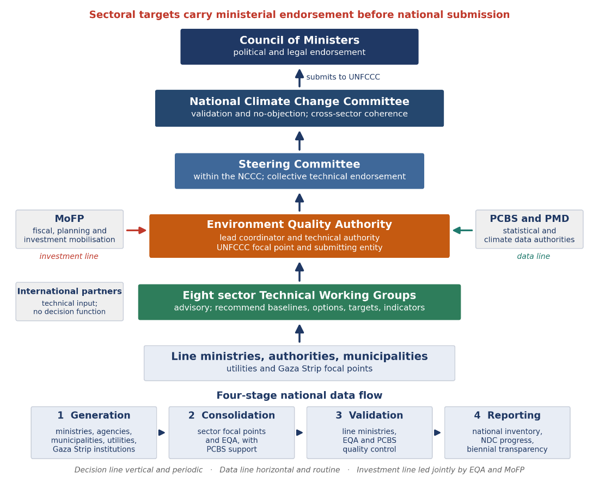
The investment line is national and joint. Investment planning, financing mobilization and donor engagement are led together by EQA and the MoFP which keeps NDC priorities, national planning frameworks and reconstruction planning for the Gaza Strip aligned to one pipeline.
All three operate across a territory in which movement between the West Bank and the Gaza Strip, and within the West Bank, is Israeli-controlled, and in which access to institutions in the Strip has been interrupted by the Israeli occupation’s aggression. The architecture responds by giving focal points in the Gaza Strip a standing place in the structure and by treating remote and hybrid engagement as routine rather than contingent. Those constraints are set out in section 5.1.
SoP’s climate reporting capability is established, as section 5.2.1 records, and it has been exercised through the aggression on the Gaza Strip rather than suspended by it: the Palestinian Central Bureau of Statistics has extended the national emissions estimate to 2023, a provisional estimate on which the key category analysis underpinning this contribution rests, while 2022 remains the base year. Where national data is incomplete, the constraint is access rather than capability, and its cause is the occupation: field verification is restricted across the majority of West Bank territory, activity data for the largest energy and water flows sits inside Israeli-controlled infrastructure, and monitoring equipment in the Gaza Strip was destroyed alongside the services it measured. Those mechanisms are set out in section 5.1.
What has been episodic is cadence, not competence. Each report to date, including this contribution, was assembled as a discrete, externally financed, project-based exercise rather than drawn from a permanent institutional home within government. The consequence is that methodological choices, data sources and stakeholder relationships are rebuilt at the start of each cycle instead of accumulating across cycles, and continuity depends on individuals rather than institutional procedure, so temporary assignment or turnover interrupts it.
SoP therefore establishes a standing institutional arrangement for NDC development and update, paired with a structured mechanism for capturing lessons at the close of each cycle, so that methods, data arrangements and relationships mature across successive contributions. A durable institutional home also gives the technical NDC process a consistent point of continuity through Cabinet and ministry transitions, insulating it from turnover at the political level. The reporting systems, data flows and platform through which that arrangement operates between cycles are set out in Chapter 11, and the capacity building it requires is carried, conditionally, in Chapter 10.
Every target in this contribution is traceable to the institution that supplied the data behind it and to the body that validated it. Engagement generated the evidence base rather than confirming conclusions already reached: ministries and authorities verified baselines and endorsed sectoral assumptions before those assumptions entered the modeling. Participation is documented by constituency, so each sector, governorate and group can locate its own need here and use it to approach climate finance. Inclusion was designed into the engagement from the start, and it works from a measured starting point: women hold less than 20 percent of positions in climate institutions, the baseline this engagement design moves from and the measure against which it tracks progress.
EQA led the stakeholder consultations with UNDP and the NDC Partnership under the constraints set out in section 5.1. Israeli occupation policies fragment Palestinian institutions and restrict movement between and within governorates and access to territory and data, so no single national convening could carry the process. Consultation was distributed across sectors and governorates instead, opening from a desk review of the NDC 2.0 implementation gaps19.
|
Engagement channel |
What it produced |
|
One-to-One Technical Meetings with ministries and authorities |
Sector activity data, baseline verification, and remaining data gaps, focusing on sector leads and their partners |
|
Sector Consultations |
Cross-sector agreement on the assumptions carried into the modeling, with active engagement of wider sector stakeholders |
|
Sectoral questionnaires |
Institutional input where movement restrictions or displacement made attendance impossible |
|
Sector Technical Working Groups |
Iterative refinement of sector priorities, targets and indicators, with active engagement of sector stakeholders |
The eight sector Technical Working Groups cover agriculture, food systems and ecosystems; water, wastewater, coastal and marine; solid waste, urban systems and infrastructure; health; transportation; industry, economy and investment; energy; and tourism. They are advisory; approval rests with the National Climate Change Committee and government.
Beyond the ministries and authorities recorded in section 6.1.1, the process drew in each constituency through channels fitted to it. Local government contributed municipal waste, landfill and wastewater data and urban resilience assumptions through the Ministry of Local Government, municipalities and the local climate units. Academia and research institutions, including Birzeit University and An-Najah National University, contributed modeling, land use and vulnerability analysis. Civil society and grassroots actors, environmental networks, human rights coalitions, farmers’ organizations and cooperatives, participated in consultation, data gathering and scenario validation, and organized labor participated through the Palestine General Federation of Trade Unions in all eight working groups, with sector papers on decent work and just transition. The private sector contributed sectoral feasibility and investment perspectives through the chambers of commerce and industry federations, and international partners provided technical assistance and data.
Institutions in the Gaza Strip participated at every stage. The aggression on the Gaza Strip removed the physical basis for convening them, so engagement proceeded through safe virtual, mobile and hybrid channels that add no burden on affected communities, using verified partner datasets and local focal points. Sector data and the reconstruction and vulnerability assumptions carried into the modeling were supplied and validated from within the Strip throughout.
The validation pathway that closes the process is graduated and documented: sector outputs endorsed by the responsible ministries, Steering Committee endorsement, National Climate Change Committee validation, and political and legal endorsement by the Council of Ministers, the decision trail recorded through the standing Steering Committee coordination cycle.
Inclusion is part of the vulnerability logic: the analysis identifies which groups bear which risks and with what constraints on coping, and each group it names was given a channel of its own.
|
Group |
Channel |
Effect on the document |
|
Women |
Ministry of Women’s Affairs, women-led institutions and women’s organizations; gender focal points in the working groups |
Co-design of adaptation measures; sex-disaggregated sector reporting |
|
Youth and children |
Youth networks and dedicated sessions |
Youth priorities in adaptation and just transition measures; age- disaggregated reporting |
|
Persons with disabilities |
Disability organizations, dedicated sessions and minimum participation thresholds |
Accessibility and mobility constraints reflected in adaptation measures; disability-disaggregated reporting |
|
Older persons and displaced people |
Community-based organizations and civil society in the Gaza Strip |
Exposure of those least able to move or recover, carried into sector priorities |
Adaptation is the overriding priority of SoP's climate response. This chapter sets out SoP's adaptation program for NDC 3.0, built on the climate and vulnerability evidence established in section 3.2 and the sector prioritization exercise that followed it through close coordination and in-depth consultation process with stakeholders.
Adaptation priorities under NDC 3.0 are grounded in the national Climate Change Vulnerability Assessment rather than carried forward from previous sector strategies. Measures were selected in response to assessed climate hazard, exposure, sensitivity and adaptive capacity, and scored against five pillars: climate risk and urgency; gender equality and social inclusion; cost- effectiveness; technical feasibility; and institutional capacity. Options were further differentiated by implementation type (policy, measure, program) creating a direct link between the climate-risk evidence, the adaptation priority and the type of implementation support required.
“A resilient Palestinian society, economy and environment able to withstand current and future climate change; water, food, health and livelihood security maintained under increasing climate stress; vulnerable communities empowered as active agents of adaptation; the Gaza Strip rebuilt to a higher standard of climate resilience than existed before its destruction; ecosystems and natural resources protected; and national adaptive capacity strengthened progressively toward the full exercise of Palestinian sovereignty over the resources on which adaptation depends.”
The vision recognizes that adaptation in SoP cannot be understood solely as adjustment to climatic hazards. Climate risk is set by the interaction of hazard with exposure, vulnerability and adaptive capacity, and restrictions on access to resources and infrastructure, institutional and fiscal constraints, displacement, infrastructure destruction and unequal access to services intensify the consequences of climatic events. NDC 3.0 responds by placing the resilience of people, essential services, ecosystems, livelihoods and institutions at the center of adaptation planning. Community- based and nature-based measures run through this chapter as a cross-cutting theme, reinforcing the sector priorities they sit alongside rather than standing apart from them.
Adaptation is implemented in close connection with mitigation, consistent with the principle established in Chapter 4. Many of SoP's priority actions carry both resilience and greenhouse-gas benefits, renewable energy for hospitals and water facilities, efficient irrigation, wastewater reuse, ecosystem restoration, sustainable land management and resource-efficient reconstruction among them. Where a measure delivers both, its adaptation value determines its inclusion in this chapter, while its mitigation benefit is recognized and accounted for under the mitigation framework in Chapter 8; the full nexus assessment is presented in Chapter 9.
Consistent with the conditionality framework established in Chapter 4, every adaptation target in this chapter is conditional: a fully financed measure still requires the permit, the land and the access that section 5.1 describes. Some measures, policy development, institutional strengthening, climate-risk integration, community-level adaptation, awareness and capacity building, face lower structural barriers and can be advanced further within SoP's available fiscal and institutional
capacity. The greater part of the program, particularly measures requiring major infrastructure investment, access to land or water beyond Palestinian control, international climate finance, technology transfer or large-scale reconstruction, remains bound by the constraints set out in section 5.1, and the Gaza-specific resilience priorities carried in section 7.2 are conditional on reconstruction access and finance in addition. Conditionality therefore reflects implementation realities rather than a reduction in adaptation ambition. It is important to note that some adaptation efforts have been implemented and being implemented through the current constraints, but they remain limited compared to the extensive need for support to implement the needed level of resilience and ambition.
Climate services and disaster risk reduction underpin the whole adaptation program rather than standing as sectors of their own. Effective adaptation requires reliable information on changing climate conditions, hazard forecasting, early warning, and systems that translate climate information into decisions by governments, service providers, communities and households. NDC 3.0 prioritizes the rehabilitation and strengthening of meteorological and hydrological observation systems, improved climate and hydrological forecasting, impact-based multi-hazard early-warning systems, integration of climate information into sector planning, strengthened civil-protection and emergency-response capacity, and stronger linkage between early warning and anticipatory action, reaching vulnerable and displaced populations specifically. These functions appear throughout the sector priorities in section 7.2, particularly in Transport, Water and Health.
Community-based and nature-based approaches are structural to SoP's adaptation model, not a supplementary category. Communities hold practical knowledge of local water systems, land conditions, cropping practice, rangelands and household vulnerability that is essential to the design, implementation and maintenance of adaptation measures, and community-scale approaches are frequently the most feasible option where restrictions on infrastructure development or access put larger centralized systems out of reach. Nature-based solutions, ecosystem restoration, agroforestry, sustainable land and soil management, watershed protection, wetland and wadi rehabilitation, urban greening and coastal ecosystem restoration, are used in preference to or in combination with engineered infrastructure wherever technically appropriate and cost-effective, for the resilience, water-regulation, heat-moderation and livelihood benefits they generate together. These measures appear throughout the sector priorities in section 7.2 rather than in a list of their own, rainwater harvesting and spring rehabilitation in Water, rangeland and terrace rehabilitation in Agriculture, community-based natural resource management in Ecosystems, nature-based coastal protection in Coastal and Marine, and urban green infrastructure in Solid Waste and Urban Infrastructure among them, and Chapter 9 assesses their benefits across sectors.
Gender equality and social inclusion is an analytical requirement in this contribution, applied in how evidence is gathered and how options are scored. The national vulnerability assessment and the gender equality and social inclusion analysis identify differing climate-risk pathways affecting women, children, older people, persons with disabilities, displaced populations, poor households, pastoral and herding communities, small farmers, informal workers, households in Area rendered as C, and residents of densely populated or poorly serviced localities20, and these vulnerabilities are addressed directly within the sector priorities of section 7.2.
It is also a set of commitments, not context. The national prioritization process endorsed gender- responsive climate governance, gender-disaggregated monitoring, women's climate-resilient livelihoods, inclusive reconstruction, and green employment for women and youth as priorities for the West Bank and the Gaza Strip, delivered through the twelve sectors of this chapter rather than as a separate sector. The empowerment, participation, and just-transition machinery that carries them is set out in Chapter 12, and the disaggregated indicators that make their delivery visible are set out in Chapter 11.
The 2016 NAP remains SoP's principal national adaptation planning instrument.21 NDC 3.0 carries this foundation forward and updates it using the latest vulnerability evidence and sector prioritization: where the CCVA confirms earlier priorities, they are retained and strengthened; where vulnerability, exposure or implementation conditions have materially changed, particularly in the Gaza Strip, NDC 3.0 updates the priorities accordingly. Consistent with the unified national framing established in Chapter 4, adaptation targets in this chapter are national: the priorities in each sector's first table apply across the territory, including the Gaza Strip. Where the Gaza Strip's post-war condition calls for priorities beyond the national list, because its baseline is reconstruction rather than the improvement of a functioning system, these are carried as an additional Gaza-specific resilience table under the relevant sectors in section 7.2, conditional on reconstruction access and finance. The sector priorities and targets of this chapter serve the thematic targets of the UAE Framework for Global Climate Resilience under the Global Goal on Adaptation, across water, food and agriculture, health, ecosystems, infrastructure and human settlements, livelihoods, and cultural heritage, and the framework’s dimensions of assessment, planning, implementation, and monitoring run through the arrangements of this chapter and Chapters 6 and 11.22
This section sets out SoP's adaptation priorities and targets across twelve sectors: Agriculture, Energy, Health, Transport, Waste, Water, Coastal and Marine, Food, Industry, Terrestrial Ecosystems, Tourism, and Urban and Infrastructure. Priorities are presented nationally in each sector, with priorities specific to the Gaza Strip's reconstruction needs set out separately. Every priority was assessed under both the Status Quo and Independence scenarios; full targets at each milestone year to 205023. The targets tabulated in this section are the 2035 values of the Status Quo pathway; the Independence pathway raises ambition across the same priorities, and the gap between the two is quantified in section 7.1. The gap between the two scenarios quantifies the adaptation cost of continued occupation. The twelve adaptation sectors run on their own structure, distinct from the six mitigation sectors of section 8.3; where one program serves adaptation and mitigation together, its quantified target is stated once, in the chapter that quantifies its principal benefit, and the other chapter points to it. Each priority is presented with its primary quantified indicator as endorsed by the sector working groups; access, inclusion, and gender-disaggregated indicators accompany these in the implementation results framework under the monitoring arrangements of Chapters 11 and 12.
Agriculture combines the sharpest climate exposure in this contribution with the deepest livelihood dependence, carrying a high-to-extreme risk rating from drought, declining rainfall, heat stress and land degradation, with rain-fed crop yields projected to fall by 20–40 percent by 2050 – considering that most Palestinian agriculture is rainfed agriculture. More than 60 percent of West Bank agricultural land is rain-fed, and olives, roughly half of agricultural GDP, are particularly exposed to heat and drought stress; Jericho and Al Aghwar, Tubas and the Northern Valleys, Jenin and Tulkarm carry the highest exposure, and Area rendered as C restrictions constrain irrigation infrastructure development and land rehabilitation specifically (section 5.1.2). In the Gaza Strip the aggression has destroyed the sector outright, more than 95 percent of agricultural infrastructure and 96 percent of cropland have been damaged and rendered inaccessible (section 3.1.5), farmland has been bulldozed and the agricultural workforce displaced, so rebuilding the productive base, with climate-smart practice such as drip irrigation, drought-tolerant varieties and protected agriculture built in from the outset rather than added afterward, is itself the first adaptation task and, at the same time, the sector's clearest adaptation opportunity. The Ministry of Agriculture leads the sector. Community-based measures, farmer-led climate-smart practice, rangeland and terrace rehabilitation, local seed conservation, carry a substantial share of the sector's program, since they remain deliverable where access constraints put larger centralized investment out of reach.
SoP priorities
|
Priority action |
2035 Target |
|
TIER 1 PRIORITIES |
|
|
Climate-Resilient Agricultural Production Systems |
35,000 ha under climate-resilient practices (WB) · 6,500 ha (Gaza) |
|
Climate-Resilient Agricultural Water Security and Renewable Energy Systems |
96 MCM/yr of additional water secured for agriculture (WB) · 25 MCM/yr (Gaza) |
|
Sustainable Agricultural Land Management and Restoration |
15,500 ha restored or managed (WB) · 4,500 ha (Gaza) |
|
Agricultural Climate Information, Community Adaptive Capacity, Extension and Early Warning Services |
70,000 farmers and rural producers reached annually (WB) · 17,500 (Gaza) |
|
Climate-Resilient Livestock and Poultry Production Systems |
9,500 livestock keepers and poultry farmers (WB) · 4,800 (Gaza) |
|
TIER 2 PRIORITIES |
|
|
Fragility-Responsive Rural Financing and Climate Insurance |
8,000 farmers with access to climate finance/insurance (WB) · 8,000 (Gaza) |
|
Climate-Resilient Urban and Peri-Urban Agriculture (Reclamation, Rewilding) |
1,700 ha under climate-resilient production (WB) · 400 ha (Gaza) |
Gaza-specific resilience priorities
|
Priority action |
2035 Target |
|
Climate-Resilient Fisheries |
2,800 active fishers benefiting from resilient fisheries management |
Fishing is treated here as an agricultural livelihood; the marine resource base it depends on is addressed under Coastal and Marine (section 7.2.7) and Water (section 7.2.6).
Energy carries a high climate risk rating from rising cooling demand as days above 35°C become more frequent, infrastructure damage from extreme weather, and water-energy nexus stress, since desalination and water pumping are themselves energy-intensive; grid instability is concentrated in Ramallah, Tubas and the Northern Valleys, Jericho and Qalqiliya, and Area rendered as C restrictions constrain both grid expansion and renewable energy deployment. Beneath this sits the structural constraint: with electricity supply overwhelmingly imported through the Israeli occupation, the largest input to energy security sits outside domestic control regardless of climate stress (section 5.1.2). In the Gaza Strip the starting position is catastrophic destruction rather than stress: the main power plant is non-functional, the transmission network severely damaged, and fuel and material access blocked; even before the aggression the population relied on only 4–8 hours of electricity a day, and energy poverty is now near-total, with critical health and water facilities running on limited backup generators. Reconstruction is accordingly an opportunity as much as a recovery task, to build a fully decentralized, solar-powered system with climate resilience integrated from the outset rather than retrofitted later. The Palestinian Energy and Natural Resources Authority leads the sector. Decentralized, renewable-based generation is prioritized ahead of grid reinforcement wherever it is deliverable: under prevailing import dependence, decentralization functions as an adaptation measure before it is a mitigation one.
SoP priorities
|
Priority action |
2035 Target |
|
TIER 1 PRIORITIES |
|
|
Decentralized Community Microgrids |
220,000 households with microgrid access (Gaza) |
|
RE for Critical Services – Hospitals and Water |
176 critical facilities with solar backup |
|
Regional Grid Interconnection – Jordan and Egypt |
495 MW of interconnection capacity |
|
TIER 2 PRIORITIES |
|
|
Energy Efficiency in Buildings and Industry |
10% energy-efficiency improvement vs. business as usual |
|
Climate-Resilient Energy Policy and Regulation Unified Energy Law enacted |
|
|
Energy MRV and Climate Finance Integration |
System operational |
|
TIER 3 PRIORITIES |
TIER 3 PRIORITIES |
|
Cooling Demand Management and Heat Adaptation |
44 (buildings meeting passive-cooling standards) |
Renewable capacity, storage, and grid-efficiency targets for the sector are carried with their targets in the mitigation contribution (section 8.3.1); the rows above carry the sector’s resilience denomination.
Gaza-specific resilience priorities
|
Priority action |
2035 Target |
|
Gaza Power Plant Natural Gas Conversion |
154 MW of plant capacity converted from diesel to natural gas |
|
Solar PV and BESS for Hospitals and Shelters |
20 systems installed |
|
RE-Powered Desalination for Water Security |
The section 7.2.6 desalination program renewable-powered by design |
|
Street Lighting and Public Safety RE |
330 km of streets with solar lighting |
|
Gaza Energy MRV Baseline |
Baseline established |
|
Gaza Energy Recovery – Decentralized PV-BESS 10 MW of off-grid/hybrid kits installed |
|
|
Energy Efficiency in Reconstruction |
66% of new buildings with efficiency standards |
Health carries a high climate risk rating from extreme-heat mortality, particularly among older people and outdoor workers; the northward expansion of vector-borne disease ranges, including malaria, leishmaniasis and dengue, as temperatures warm; WASH-related disease outbreaks linked to water scarcity and sanitation failure; and the mental-health impact of climate-related disasters, concentrated in Ramallah, Hebron and Nablus. In the Gaza Strip, fewer than half of hospitals and under 38 percent of primary healthcare centers remain even partially functional (section 3.1.5); the collapse of WASH services has created acute infectious-disease outbreak risk under conditions of extreme heat and overcrowding, and climate health risk there cannot be separated from the humanitarian emergency, rebuilding must integrate backup power, water storage and heat- resilient design from the outset, and mental health and psychosocial support needs, already overwhelming, will compound as climate disasters occur against a backdrop of trauma and displacement. The Ministry of Health leads the sector. Health-system resilience, solar backup at facilities, mobile and emergency service deployment, and mental health and psychosocial support integrated into primary care, is prioritized alongside surveillance and early warning, since a hospital without power is not climate-resilient regardless of what it can detect.
SoP priorities
|
Priority action |
2035 Target |
|
TIER 1 PRIORITIES |
|
|
Climate-Health Surveillance and Early Warning 8 governorates with coverage |
|
|
Vector-Borne and Water-Borne Disease Control Program |
13 governorates covered (West Bank and Gaza) |
|
Heat Stress Response Plans and Cooling Centers |
80 localities with heatwave emergency plans |
|
Climate-Resilient Health Infrastructure (including green infrastructure for new buildings and energy efficiency measures) |
143 facilities with solar backup and resilient design |
|
Mental Health and Psychosocial Support (including mobile clinics as a priority) |
20 psychosocial support activities enabled |
|
Mobile and Emergency Health Service Deployment |
5 mobile clinics deployed |
|
TIER 2 PRIORITIES |
|
|
Water (including Treated Wastewater) and Food Safety Monitoring |
100% water and food safety monitoring coverage |
|
Medical Waste Management Standards and Facilities |
100% of health facilities with safe medical waste systems (West Bank); 94% (Gaza) |
|
Air Quality Monitoring and Response |
33 monitoring stations operational |
|
Promote Climate-Health in Education and Research |
Included across education levels |
|
Climate-Health MRV and Finance Integration |
System operational |
|
TIER 3 PRIORITIES |
TIER 3 PRIORITIES |
|
Community Health Volunteering and Outreach |
4 initiatives |
Gaza-specific resilience priorities
|
Priority action |
2035 Target |
|
Gaza Health System Emergency Reconstruction |
100% of pre-war facilities operational |
|
Solar Power for Gaza Hospitals |
50 hospitals with solar power systems |
|
Vector and Waterborne Disease Control (Gaza) |
5-day outbreak response time |
|
Mental Health Services for Climate and Conflict |
550,000 people reached by MHPSS services |
|
Nutrition and Food Safety Surveillance |
National system operational |
|
Environmental Health Monitoring (Post-War) |
88 monitoring sites active |
Transport carries a high climate risk rating from rising temperatures and more frequent heatwaves, which accelerate pavement deterioration and shorten asset lifespans, and from flash flooding, which frequently damages roads, bridges and drainage systems and disrupts access to health, education, markets and emergency response, particularly for vulnerable communities. In the West Bank, fragmented connectivity and limited public transport options, a direct consequence of the access and permitting constraints described in section 5.1.1, increase dependence on private vehicles and reduce system resilience. In the Gaza Strip, extensive destruction of roads, bridges and public transport facilities makes climate-resilient reconstruction urgent, and climate-proofing that reconstruction is an opportunity to build a safer, more efficient and lower-emission transport system rather than reproduce what existed before. The Ministry of Transport leads the sector.
SoP priorities
|
Priority action |
2035 Target |
|
TIER 1 PRIORITIES |
|
|
Early Warning System for Extreme Weather Events |
70 sensing stations |
|
Resilient Road Infrastructure, Flood Drainage and Culverts |
1,100 roads incorporating resilient infrastructure elements |
|
Gender-Safe and Accessible Transport Design |
5% of public transport routes with gender- safety features |
|
Transport Climate Policy and MRV Framework |
System operational |
|
Climate-Informed Transport Master Plan |
Plan updated |
Fleet electrification and efficiency programs, including electric and hybrid fleet penetration, charging infrastructure, eco-driving, and the Gaza electric bus pilot, are carried with their targets in the mitigation contribution (section 8.3.2).
Gaza-specific resilience priorities
|
Priority action |
2035 Target |
|
Gaza Transport Network Emergency Recovery |
82% of road network restored to functional level |
|
Green and Climate-Resilient Reconstruction Roads |
495 km of roads rebuilt to a resilient standard |
|
Gaza Transport MRV and Registry Restoration |
Vehicle registry restored and operational |
|
Sustainable Urban Mobility Plan for Gaza |
6 municipalities with mobility plans |
Solid waste management carries its own distinct climate exposure: higher temperatures accelerate disease vectors and odor from open dumps, flooding spreads contamination from unlined landfills into groundwater, and heat stress affects collection and treatment operations directly. In the Gaza Strip, access to both sanitary landfills has been cut off, collection has collapsed, and war debris has added an entirely new waste stream that must be cleared before recovery can proceed (section 5.1.3). The Ministry of Local Government leads the sector.
SoP priorities
|
Priority action |
2035 Target |
|
TIER 1 PRIORITIES |
|
|
Waste Collection Modernization |
99% waste-collection coverage, with capacity margin for the 2035 population |
|
Illegal Dumpsite Closure and Remediation |
94% of dumpsites closed or remediated |
Methane capture, waste-to-energy, and recycling programs are carried with their targets in the mitigation contribution (section 8.3.3); the rows above carry the sector’s service-continuity and risk denomination.
Gaza-specific resilience priorities
|
Priority action |
2035 Target |
|
Solid Waste Emergency Management (Gaza) |
82% of waste collection restored to functional level |
|
Rubble Management and Circular Construction |
31 Mt of rubble processed for reuse |
Medical waste management for the Gaza Strip is carried, with its West Bank component, under Health (section 7.2.3).
Water carries an extreme climate risk rating from drought and water scarcity: West Bank aquifer abstraction stands at roughly 90 percent of sustainable yield, joint management is constrained by the Oslo Accords, groundwater overextraction is concentrated in the Jordan Valley governorates of Tubas and Jericho, and recharge rates are projected to fall by 15–25 percent by 2050. Effective winter rainfall, the primary source of that recharge, is declining and arriving in shorter, more concentrated seasons (section 3.2), and drilling, well construction and water infrastructure across most of the West Bank require permits the occupation controls (section 5.1.2). In the Gaza Strip the Coastal Aquifer is in crisis: over extracted by an estimated 200 million m³ a year, with chloride levels roughly ten times the WHO limit24, it is an existential threat to the entire population of the Gaza Strip, and saltwater intrusion is accelerating with sea level rise projected at 20–40 cm by 2050; the aggression has destroyed desalination plants, pipelines and pumping stations, leaving the population reliant on trucked water far below minimum survival standards. Restoring what existed before the aggression would not restore water security, since the aquifer was already failing beforehand. The Palestinian Water Authority leads the sector. Wastewater is treated as part of the same cycle rather than a separate sector: collection, treatment and reuse convert a hazard into the territory's most expandable water source, and managed aquifer recharge, rainwater harvesting and spring rehabilitation are nature-based by design.
SoP priorities
|
Priority action |
2035 Target |
|
TIER 1 PRIORITIES |
|
|
Wastewater Collection, Treatment, Distribution and Reuse Scale-up (including reduction of transboundary wastewater burdens) |
20 MCM/yr of treated wastewater reused for agriculture |
|
Non-Revenue Water Reduction – Network Rehabilitation and Pressure Management |
22% cumulative reduction in non-revenue water |
|
Rainwater Harvesting Infrastructure (large scale: dams and equivalent) |
8.5 MCM/yr harvested |
|
Wells and Springs Rehabilitation |
95% of wells and springs rehabilitated |
|
Water Sector MRV and Climate Finance |
System operational |
|
TIER 2 PRIORITIES |
|
|
Sustainable Groundwater Governance |
86% abstraction-to-sustainable-yield ratio (converging toward ≤100%) |
|
Stormwater Management and Urban Drainage, with Drought and Flood Early Warning and Hydro-Meteorological Systems |
9% of urban areas with improved stormwater drainage coverage |
Gaza-specific resilience priorities
|
Priority action |
2035 Target |
|
Desalination Rehabilitation and Expansion (decentralized and scalable) |
35 MCM/yr of capacity |
|
Water Infrastructure Reconstruction (resilient) and Non-Revenue Water Reduction – Post- Reconstruction Pipes |
82% of water infrastructure rebuilt to resilience standards |
|
Wastewater Network and Treatment Restoration |
58% of wastewater treated before discharge |
|
Water Sector Emergency Preparedness and Contingency Planning |
5 districts with WASH contingency plans |
|
Coastal Aquifer Managed Recharge |
44 MCM/yr recharged |
|
Urban Stormwater and Flood Risk Management 30% of displacement/urban areas with |
improved drainage |
|
Rainwater Harvesting Infrastructure (Gaza) |
1.8 MCM/yr harvested |
Coastal and marine adaptation is concentrated in the Gaza Strip, whose 40 km coastline, the whole of SoP's Mediterranean coast, is highly exposed to sea level rise, projected at 20–40 cm by 2050, and to storm surge, and it operates under the tightest spatial constraint in this contribution: the occupation has cut the fishing area to a fraction of the Oslo stipulation (section 5.1.2), and the aggression has damaged the coastal infrastructure and livelihoods that remained within it. Warming seas are pushing fish stocks toward cooler, deeper water beyond that reduced area, and rising atmospheric carbon dioxide is acidifying seawater in ways that affect shell formation and fish survival. Saltwater intrusion into the Coastal Aquifer, already at crisis levels, will intensify further as seas rise, and coastal erosion, accelerating with sea level rise and raising the risk of collapse at the coastal beach cliff, threatens both infrastructure and the livelihoods of fishing communities; agricultural land makes up a significant share of the coastal area and of the Gaza Strip's total agricultural production, so this erosion is a livelihood risk as much as an environmental one. Because Israeli restrictions on wastewater treatment infrastructure in the Gaza Strip route a substantial volume of untreated wastewater directly into the sea, marine water quality and water- sector recovery are the same problem viewed from two sides. The EQA holds overall responsibility for coastal and marine policy, working with PWA, MoA and MoTA, whose sectors carry the sector's priorities in practice.
Gaza-specific resilience priorities
|
Priority action |
2035 Target |
|
Fisheries Resilience and Coastal Livelihoods |
2,000 fishing families with modernized equipment and cold chain |
|
Marine Ecosystem Conservation |
62% reduction in raw wastewater discharge to the sea |
|
Coastal Area Protection |
10 km of coastline (of ~40 km total) protected |
SoP's food system carries a high climate risk rating, driven by reduced domestic production under drought and heat stress, an estimated 15–25 percent loss of perishable produce to extreme heat after harvest, and supply-chain disruption from extreme weather; import dependence on global markets adds a further exposure, since climate-driven price spikes are projected to intensify with global warming and SoP has limited capacity to absorb them domestically. Occupation control over borders, crossings and the movement of goods compounds this: a harvest failure or a closed crossing produces the same shortage on a Palestinian table (section 5.1.1–section 5.1.3). In the Gaza Strip the food system has collapsed outright under the aggression, into near-total dependence on humanitarian aid, destroyed market infrastructure and a blockade on commercial imports that together have produced famine conditions; reconstruction must build in climate resilience, cold chain infrastructure, climate-proofed market facilities, restored local production, from the outset rather than reproduce the pre-war system's vulnerabilities. The Ministry of Agriculture leads the sector with the Ministry of National Economy.
SoP priorities
|
Priority action |
2035 Target |
|
TIER 1 PRIORITIES |
|
|
Integrated Climate-Resilient Food Systems, Storage and Markets |
16% reduction in post-harvest losses (WB) · 15% (Gaza) |
|
Strategic Food Reserves and Food Security Preparedness |
22% of national food requirements held in reserve (WB) · 22% (Gaza) |
|
Drought- and Heat-Tolerant Crop Development 5,500 ha cultivated with tolerant varieties |
(WB) · 4,500 ha (Gaza) |
|
Local Food Sovereignty and Production Diversification |
29.2% of domestic consumption met by local production (WB) · 22% (Gaza) |
|
Healthy and Nutritious Climate-Resilient Food Systems |
53% of population with access to nutritious, climate-resilient food (WB) · 32% (Gaza) |
|
Large-Scale Strategic Storage and Post- Harvest Infrastructure for Field Crops and Fodder |
70,000 MT of storage, processing and cold- storage capacity (WB) · 22,000 MT (Gaza) |
The same food-security priorities apply in the Gaza Strip: the six priorities above cover both areas, with delivery in Gaza sequenced against relief and reconstruction timelines rather than pursued as a separate track.
Industry faces climate risk from heat stress on operations, water scarcity affecting cooling and production processes, and supply-chain disruption, on top of a productive base that is already small, import-dependent and energy-exposed. It is also where adaptation and mitigation converge most often, since efficiency, water reuse and renewable adoption serve both objectives through the same investment (Chapter 9). In the Gaza Strip the sector has been largely destroyed by the aggression, so recovery of the industrial base, home-based enterprise formalization, debris clearance, renewable-powered reconstruction, is treated as a distinct resilience track, since the sector's baseline in Gaza is reconstruction rather than the improvement of an operating system. The Ministry of Industry leads the sector.
SoP priorities
|
Priority action |
2035 Target |
|
TIER 1 PRIORITIES |
|
|
Industrial Energy Efficiency Audit and Retrofit Program |
16% of factories with efficiency audits and retrofits |
|
Climate-Smart SME Support and Green Finance 275 MSMEs with green certification or finance |
|
|
Industrial Water Efficiency and Reuse |
1,900 MSMEs with water-efficiency measures (WB) · 50% of rebuilt facilities incorporating water efficiency or reuse (Gaza) |
|
Industrial Wastewater Treatment and Reuse |
18% of industrial wastewater treated before discharge (WB) · 18% (Gaza) |
|
TIER 2 PRIORITIES |
|
|
Carbon Market Readiness and Voluntary Carbon Market |
Operational |
|
Green Industrial Zones and Eco-Industrial Parks |
2 zones with green certification |
|
Climate Finance Taxonomy and Industrial MRV |
System operational |
|
Strategic Material Storage for Climate Resilience |
33 MT-equivalent storage capacity |
Cement co-processing is carried with its target in the mitigation contribution (section 8.3.5).
Gaza-specific resilience priorities
|
Priority action |
2035 Target |
|
Gaza Industrial Base Reconstruction (Green) |
9% of pre-war facilities operational |
|
Home-Based Enterprise Formalization (Gaza) |
11,000 enterprises formally registered |
|
Renewable-Powered and Efficiency- Considered Industrial Recovery |
50% of energy needs met from renewables |
|
Climate-Smart Fisheries Value Chain (Gaza) |
6,700 fishing families with improved value- chain access |
|
Gaza Industrial Waste Management |
25% of damaged sites cleared of debris and hazardous waste |
Climate-Smart Fisheries Value Chain is cross-referenced from Coastal and Marine (section 7.2.7).
Terrestrial ecosystems carry a high climate risk rating from land degradation and desertification, with an estimated 30 percent of land already degraded, biodiversity loss affecting an estimated 15 percent of plant species, habitat fragmentation, invasive species and increasing wildfire risk, pressures compounded by the occupation's control over land use, particularly in Area rendered as C, which constrains the sector's principal adaptive levers: land, grazing range and habitat connectivity (section 5.1.1). The Wadi Gaza wetland, a critical biodiversity corridor and the Gaza Strip's most significant terrestrial ecosystem, requires urgent restoration. The EQA leads the sector. Community-based natural resource management carries the leading share of the sector's program, reflecting both the strength of local ecological knowledge and the limits the occupation places on larger protected-area expansion.
SoP priorities
|
Priority action |
2035 Target |
|
TIER 1 PRIORITIES |
|
|
Community-Based Natural Resource Management |
85 communities implementing ecosystem management plans (WB) · 22 (Gaza) |
|
Biodiversity Conservation, Habitat Restoration and Monitoring |
18 operational monitoring stations (WB) · 500 ha of habitats restored or protected (Gaza) |
|
TIER 2 PRIORITIES |
|
|
Climate-Resilient Terrestrial Ecosystems |
14,500 ha restored (WB) · 800 ha (Gaza) |
|
Protected Area Expansion, Habitat Connectivity and Management |
320 km² under formal protected status with active management (WB) |
Gaza-specific resilience priorities
|
Priority action |
2035 Target |
|
Climate-Resilient Coastal and Marine Ecosystems |
3,000 ha of coastal and marine areas under resilient management |
|
Wadi Gaza Ecosystem Restoration |
120 ha restored |
Tourism faces climate risk from extreme heat reducing visitor comfort, coastal erosion threatening beach tourism assets, and heritage-site damage from flooding and weathering, layered on an accessibility constraint the occupation imposes independently of climate risk. The sector's adaptation is therefore as much about protecting what exists as about growing what is possible: site protection, heat mitigation for visitors and workers, and community-based tourism that keeps the economic benefit local. The Ministry of Tourism and Antiquities leads the sector.
SoP priorities
|
Priority action |
2035 Target |
|
TIER 1 PRIORITIES |
|
|
Climate-Resilient Heritage Site Protection |
50 heritage sites with protection plans implemented (cumulative) |
|
Heat Mitigation at Key Tourism Sites |
60 sites with operational heat-mitigation measures |
|
Flood Risk Assessment and Protection for Vulnerable Sites |
35 sites and communities with completed assessments and protection measures |
|
Sustainable Tourism and Green Certification |
100 tourism businesses holding recognized green certification |
|
Eco-Tourism and Nature-Based Tourism Development |
50 registered eco-tourism sites and trails |
|
Tourism Climate Risk Monitoring |
11 tourism zones covered by monitoring and early warning |
|
Water Efficiency in Hotels and Tourism Facilities and Infrastructure |
95 facilities with certified water-efficiency systems |
|
Tourism Sector Climate Workforce Training |
4,400 workers trained |
|
Community-Based Tourism Resilience Programs |
60 communities with operational programs |
|
TIER 2 PRIORITIES |
|
|
Climate-Resilient Tourism Marketing Strategy |
3.2 million international tourist arrivals per year under diversified marketing |
Gaza-specific resilience priorities
|
Priority action |
2035 Target |
|
Coastal and Maritime Archaeology Protection and Rehabilitation |
16 coastal and marine sites rehabilitated |
Urban areas face high risk from flash floods, concentrated in Gaza City, Hebron and the Jericho wadis, and from urban heat-island effects, with urban temperatures running 3–5°C above rural areas in summer, both compounding physical infrastructure damage. Population density in the Gaza Strip exceeds 5,200 persons per km², and the occupation confines municipal planning mandates to a fraction of West Bank territory, sharpening this exposure further (section 5.1.1). The Ministry of Local Government leads the sector with the Ministry of Public Works and Housing. Nature-based approaches to urban resilience, green space, urban greening, drainage that works with rather than against the water table, are prioritized alongside engineered infrastructure.
SoP priorities
|
Priority action |
2035 Target |
|
TIER 1 PRIORITIES |
|
|
Climate-Resilient Road Infrastructure |
150 km of roads to a resilient standard |
|
Nature-Based Solutions for Urban Resilience |
2.5 m² of urban green space per person |
|
TIER 2 PRIORITIES |
|
|
Green Building Standards and Codes |
10% of new public buildings meeting green standards |
|
Urban Drainage and Flood Protection |
20% of urban population protected from flood risk |
|
Climate-Smart Municipal Planning and M&E |
30% of municipalities with climate-risk plans |
Gaza-specific resilience priorities
|
Priority action |
2035 Target |
|
Green Reconstruction Standards |
77% of new buildings meeting green resilience standards |
|
Urban Drainage and Flood Resilience |
132 km of urban drainage rehabilitated |
|
Nature-Based Coastal Protection |
22 km of coastal zone under nature-based protection |
Nature-Based Coastal Protection is cross-referenced from Coastal and Marine (section 7.2.7).
SoP's GHG mitigation contribution is made where the causes lie elsewhere and the levers are constrained: SoP is responsible for a negligible share of global emissions, controls neither its largest energy input nor most of its territory's land use, and nonetheless puts forward an emissions pathway held below business as usual under both of the futures it models. This chapter rests on the inventory and baseline in section 8.1 and carries the national targets, their sectoral composition, the fairness and ambition case, and the mitigation dimension of the reconstruction of the Gaza Strip, with the adaptation-mitigation nexus as the cross-cutting principle developed in Chapter 9.
The national greenhouse gas inventory for the base year 2022 is compiled by the Palestinian Central Bureau of Statistics under IPCC category-based territorial accounting25, covering carbon dioxide, methane and nitrous oxide; PCBS published the 2022 inventory at 6,483.71 ktCO2e on SAR GWP values, and the 2022 base carried across this contribution is 6,114.9 ktCO2e, the recalculation of that inventory on AR6 GWP-100 values on which the pathways are computed (Chapter 13). The key category shares cited in this section are drawn from the provisional 2023 extension of the inventory series; 2022 remains the base year.
covering carbon dioxide, methane and nitrous oxide; the modeled 2022 base-year emissions level carried across this contribution is 6,114.9 ktCO2e. Transport dominates the profile: key category analysis for 2023 places it at 59.4 percent of national emissions, the largest single category within the Energy sector, ahead of other energy use, a structure that reflects an electricity supply recorded in the inventory of the country of generation (section 2.3) and an economy whose stationary industrial base is small. Through the first five years of the projection, electricity supply remains predominantly imported and its generation emissions are recorded in the inventory of the country of generation; from 2030 the projections carry a domestic generation buildout, led by a 1,080 MW combined-cycle and gas-fired fleet serving the reconstruction of the Gaza Strip, and Energy Industries emissions enter the national account as domestic generation displaces imported supply. The 2022 inventory estimates the energy and waste categories in full and AFOLU in part, and records industrial processes and product use as not estimated; IPPU enters the pathway projections from 2026, and the asymmetry is stated rather than netted out.
The projections are produced on the LEAP-PAL 2050 platform, applying the IPCC 2006 Guidelines and AR6 GWP values across a modeling horizon from the 2022 base year to 2050. The modeled series is benchmarked against the published inventory record, and alignment between the two will be maintained and reported under the arrangements in Chapter 11. Because the PCBS inventory publishes on SAR values and reporting under the Enhanced Transparency Framework applies AR5 GWP-100 per Decision 18/CMA.1, the conversion posture across the three metric sets is stated in SoP’s Biennial Transparency Report. War-related disruption is represented through explicit, time- bound shock and recovery assumptions within the scenarios rather than normalized into the baseline, and emissions directly attributable to military operations are excluded consistent with IPCC practice.
Two business as usual trajectories are reported, one under each structural condition established in Chapter 4. Under the Status Quo, business as usual reaches 9,979.6 ktCO2e in 2035 and 10,836.4 ktCO2e in 2040; under Independence, 10,820.8 and 12,651.8 ktCO2e. The Status Quo trajectory sits below the 2022 base level through the opening years of the period, and the reason is stated plainly: the modeled series falls 12.8 percent between 2022 and 2024 because the aggression on the Gaza Strip and the contraction it produced suppressed activity, not because mitigation occurred. Emissions rise along both reference paths as recovery, reconstruction and the return of population restore normal national life, which is the condition the ambition case in section 8.4 addresses as suppressed demand.
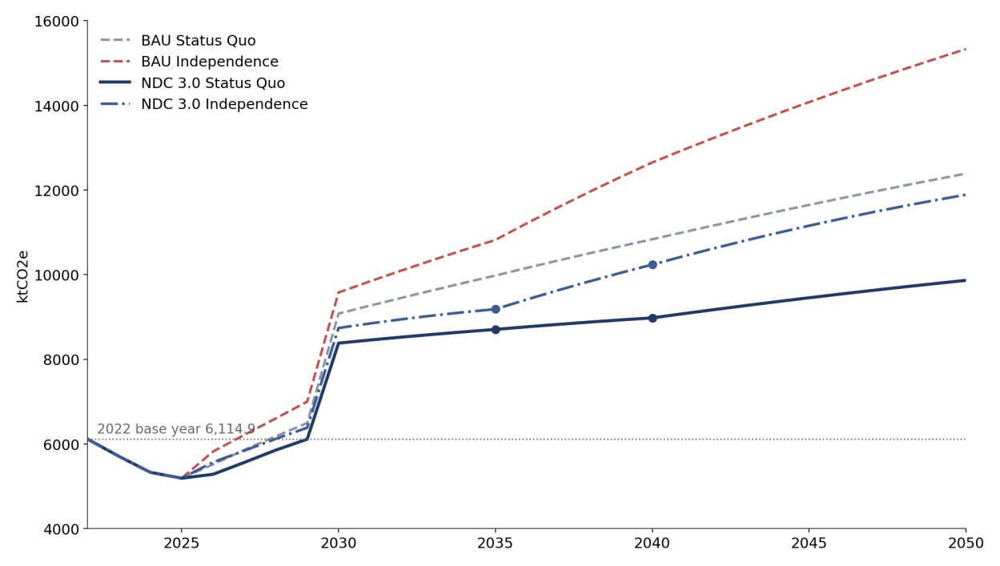
The inventory improves on a phased plan carried as a conditional contribution: bringing industrial processes into estimation, completing the remaining AFOLU categories, moving key categories from default factors toward country-specific data, standardizing QA/QC, digitizing the data systems that feed the inventory, and strengthening the institutional coordination behind it. Reporting-system detail sits with the transparency arrangements in Chapter 11 and the Biennial Transparency Report.
“Palestine's mitigation vision is a development path that decouples national development from an imposed, carbon-intensive energy dependence, delivered to the limit that structural conditions permit and deepened as they lift.”
The vision translates into a contribution through the scenario architecture established in Chapter 4: distributed renewable generation where the occupation permits construction, efficiency in what is built and rebuilt, and a transition whose depth is set by the structural condition each pathway models explicitly. The Status Quo target is the reference pathway for accounting and tracking, and the Independence target communicates the higher level of ambition achievable were structural conditions to change (Chapter 4).
SoP puts forward, as its contribution, the following national emissions levels, each measured against the business as usual projection of the same pathway.
|
Target |
Status Quo |
Independence |
|
2022 base year, emissions level |
6,114.9 ktCO2e |
6,114.9 ktCO2e |
|
2035, NDC target year: emissions level |
8,706.6 ktCO2e |
9,185.1 ktCO2e |
|
2035: reduction below business as usual |
12.8% |
15.1% |
|
2035: abatement delivered |
1,273 ktCO2e |
1,636 ktCO2e |
|
2040, extended target year: emissions level |
8,979.0 ktCO2e |
10,238.0 ktCO2e |
|
2040: reduction below business as usual |
17.1% |
19.1% |
These are single-year, economy-wide targets on the coverage stated in section 8.1, read against the 2022 base year. Progression against NDC 2.0 is demonstrated on the absolute levels put forward, with the full comparison and its basis carried in section 2.2 and the fairness and ambition case argued in section 8.4. The 2030 short-term results and the 2050 indicative trajectory are presented with the sectoral pathways in section 8.3.
Every target is conditional on international climate finance, technology transfer and capacity support, on the basis Chapter 4 establishes: conditionality is a characteristic of the targets rather than a separate target set, and domestic co-financing exists and is reported but makes no target deliverable alone. The finance, technology and capacity requirements that give this conditionality operational content are quantified in Chapter 10.
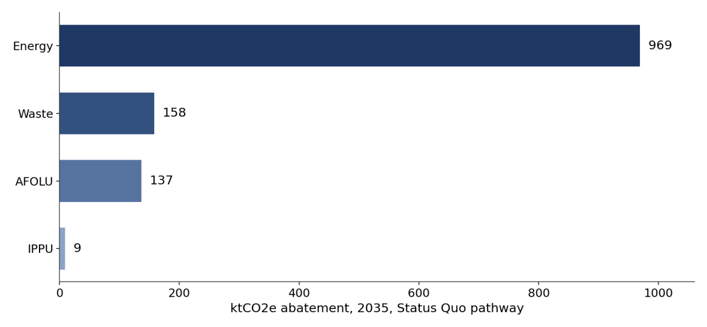
The national targets disaggregate into six sector contributions: Energy, Transport, Solid Waste, Agriculture (including Forestry and Other Land Use), Industry, and Water. Each contribution is drawn from the 72 technology and policy options scored against six weighted criteria, classified into priority tiers, and consolidated into 70 nationally endorsed options26. Each sector carries a verified priorities table showing the endorsed options by tier with their NDC 3.0 Status Quo target at 2035, the reference indicator established in Chapter 4; options deliverable only under the Independence pathway are named in the sector text, and every option carries full four-pathway trajectories at every milestone year. Measures specific to the Gaza Strip are presented in a Gaza- specific table within their sector, consistent with the unified national framing this contribution maintains and with delivery sequenced against reconstruction and relief timelines. The mitigation sector set differs by design from the adaptation sector set in Chapter 7, which follows the twelve- sector national adaptation taxonomy; the mitigation sectors follow the nationally endorsed mitigation target tables. Non-GHG indicators accompany every sector so that progress remains measurable where emissions attribution is contested or data-constrained.
Energy carries the widest option set of the contribution, and its structure reflects the constraint established in section 5.1: generation SoP can build is distributed, and efficiency is the lever that no permit can withhold. The sector accounts for the largest share of deliverable abatement across the pathways (section 8.1), led by solar programs at every scale, from utility-scale plants under the LSPAP framework to rooftop and specialized applications, supported by grid, storage and demand-side measures. A further tranche of supply, Gaza offshore gas extraction and concentrated solar power, is deliverable under the Independence pathway and carries full four-pathway trajectories; off-grid and mini-grid systems and onshore wind at small and medium scale are carried under both pathways.
SoP priorities
|
Priority action |
2035 Target |
|
TIER 1 PRIORITIES |
|
|
Large-scale solar PV (utility scale) – LSPAP and successor programs |
670 MW installed, cumulative |
|
Rooftop solar and building yards PV scale-up – residential, commercial, public and service, agriculture and industry buildings for the West Bank and Gaza |
450 MW installed, cumulative |
|
Solar water heating (SWH) – residential and commercial scale-up |
80% of households with solar water heating |
|
Distributed solar PV for specialized applications – telecom, off-grid |
4 MW installed, cumulative |
|
Regulatory framework and fiscal incentives for RE/EE |
Framework adopted |
|
TIER 2 PRIORITIES |
|
|
Floating solar – PV on PWA reservoirs and wastewater lagoons |
8 MW installed, cumulative |
|
Battery energy storage (BESS) – grid-scale |
12% of peak electricity demand |
|
Transmission and distribution grid modernization |
Grid losses reduced to 12% against the 22% baseline |
|
SCADA, automation, and energy management systems |
48% of the distribution network under SCADA |
|
Smart metering and demand-side management (DSM) |
36% of connections with smart meters |
|
Building energy codes – new construction and major renovation |
48% of new construction complying |
|
High-efficiency HVAC and cooling systems |
40% of HVAC sales meeting high-efficiency standards |
|
LED lighting transition and municipal street lighting program |
86% of lighting stock transitioned |
|
Appliance and equipment labeling – MEPS |
40% of new appliance sales meeting MEPS |
|
Industrial energy efficiency – motor systems, VSD, process heat |
28% of industrial motor systems upgraded |
|
Solar water heating – institutional and industrial scale-up |
28% of facilities with solar water heating |
|
Grid and market readiness assessments |
Assessments adopted |
|
Quality standards and component certification for RE/EE equipment |
Standards adopted |
|
Workforce development and professional training for RE/EE |
2,500 energy professionals trained, cumulative |
|
Institutional capacity and governance for energy sector |
Framework adopted |
|
Finance facilitation and investment mobilization for RE/EE, and RE and EE labs |
Framework adopted |
|
Stakeholder awareness and consumer engagement for RE/EE |
16,000 people reached, cumulative |
Gaza-specific energy measures, including off-grid and mini-grid systems and decentralized solar with storage, are carried through the Gaza reconstruction layer with delivery sequenced against reconstruction and relief timelines (section 8.5).
Transport is the largest single source category in the inventory, a subcategory of the Energy sector accounting for 59.4 percent of national emissions in the 2023 key category analysis (section 8.1), and its profile is shaped by an aging fleet whose renewal is constrained by import restrictions documented in section 5.1. The contribution combines fleet transformation with the enforcement and data instruments that make it measurable, reflecting the sector's dependence on regulatory delivery as much as on capital.
SoP priorities
|
Priority action |
2035 Target |
|
TIER 1 PRIORITIES |
|
|
Electric and hybrid vehicle fleet penetration |
19% of the private car fleet electric or hybrid |
|
Scrappage and replacement program for trucks and buses over 18 years of age |
1,200 vehicles scrapped annually |
|
Statutory vehicle emissions inspection and testing program |
45% of on-road vehicles tested |
|
Transport sector MRV system and fleet data registry |
System operational |
|
Illegal vehicle seizure and destruction |
18,000 vehicles seized and destroyed, cumulative |
|
TIER 2 PRIORITIES |
|
|
EV charging infrastructure network |
25 charging stations installed |
|
Public bus fleet upgrade from minibus to large-capacity vehicles |
32% of the minibus fleet replaced |
|
Bus rapid transit corridor development |
25 km of operational BRT corridor, cumulative |
|
Eco-driving and fleet efficiency programs |
11,000 drivers trained, cumulative |
The same national priorities apply in the Gaza Strip, with fleet and infrastructure delivery sequenced against reconstruction timelines (section 8.5).
Gaza-specific resilience priorities
|
Priority action |
2035 Target |
|
Electric bus pilot for post-aggression in Gaza |
66 electric buses operational |
Waste is the second-largest emitting sector after Energy as a whole, within which transport is the dominant category; the sector is dominated by methane from disposal sites and wastewater treatment (section 8.1), and in the Gaza Strip the sector's task begins with the management of reconstruction rubble at a scale without precedent in the national record (section 3.1.5). The contribution pairs disposal-site engineering and collection coverage with diversion, recovery and the circular economy instruments that reduce what reaches disposal at all. The combined sector heading follows the nationally endorsed target tables.
SoP priorities
|
Priority action |
2035 Target |
|
TIER 1 PRIORITIES |
|
|
Engineered sanitary landfill cells, leachate management and dumpsite closure |
65% of landfill sites with engineered cells and leachate management |
|
Waste collection coverage expansion and fleet modernization |
99% population waste-collection coverage |
|
Random dumping elimination and management of current dumpsites |
1.4 million tons of MSW managed in an environmentally sound manner |
|
TIER 2 PRIORITIES |
|
|
Waste reduction, source separation and recycling infrastructure |
15% of MSW source-separated or recycled |
|
Landfill gas capture and electricity generation |
10 MW installed from LFG capture, cumulative |
|
Waste-to-energy: incineration, RDF co- processing and anaerobic digestion |
42 MW installed, cumulative |
|
Source-separated organic waste composting and anaerobic digestion |
20% of the organic MSW fraction diverted |
|
Wastewater sludge biogas recovery and co- generation |
12% of WWTP electricity demand met by sludge biogas |
|
Waste sector MRV system and emissions data registry |
85% implementation |
|
Extended producer responsibility, waste levies and a circular economy framework |
22% implementation |
Gaza-specific resilience priorities
|
Priority action |
2035 Target |
|
Rubble management in connection with municipal services in the Gaza Strip |
68 million tons of rubble removed and managed27 |
Delivery of rubble management is wholly conditional on reconstruction finance and sequenced against relief and reconstruction timelines (section 8.5).
Agriculture's mitigation contribution operates under the land and water access constraints documented in section 5.1, with most agricultural land in Area rendered as C under Israeli control, and it is selected for combined value: nearly every measure carries an adaptation benefit alongside its abatement, consistent with the nexus principle in Chapter 4 and the analysis in Chapter 9. The contribution spans soil and crop management, irrigation energy, organic waste streams and the land-based removals of afforestation and rangeland restoration.
SoP priorities
|
Priority action |
2035 Target |
|
TIER 1 PRIORITIES |
|
|
Climate-smart crop management: conservation tillage, permaculture, drought- tolerant varieties and soil carbon |
35% of cropland under conservation tillage or CSA crop management |
|
Precision irrigation and solar-powered pumping |
48% of irrigated area under drip or micro- irrigation with solar pumping |
|
Composting, agricultural waste management, sludge reuse, crop residue and manure management |
30% of agricultural organic waste streams diverted to productive reuse |
|
Afforestation, reforestation and rangeland restoration |
400 ha of cumulative restoration area (afforestation and reforestation) |
|
TIER 2 PRIORITIES |
|
|
Integrated soil fertility management and N2O reduction |
16% of cropland under integrated soil fertility management |
|
Livestock productivity and manure management |
42% of livestock under improved feed and manure management |
|
Agroforestry systems: trees on farmland |
1,100 ha of cumulative agroforestry area |
|
Agricultural and AFOLU MRV: emissions registry and data system |
85% implementation |
The same national priorities apply in the Gaza Strip, with restoration of agricultural land sequenced against rubble clearance and reconstruction (section 8.5).
The afforestation, agroforestry, and rangeland rows are the sequestration-accounted subset of the wider restoration programs of the adaptation contribution (sections 7.2.1, 7.2.10); cropland, irrigation, and livestock shares here denominate the same national programs whose area, volume, and household targets are carried in section 7.2.1. The removal rows enter the pathway projections and target accounting, while the 2022 base-year inventory estimates the cropland and livestock categories, an asymmetry stated in section 8.1 and Chapter 13.
Industry's stationary base is small and its inventory category is recorded as not estimated in 2022 (section 8.1), so the sector's contribution is built for the industrial economy SoP intends to grow rather than the one the occupation has confined: fuel switching and electrification ahead of demand, decarbonization of the stone and marble sector that anchors industrial exports, and the circular economy practices that decouple output from process emissions.
SoP priorities
|
Priority action |
2035 Target |
|
TIER 1 PRIORITIES |
|
|
Industrial fuel switching and electrification |
32% of industrial process heat and power electrified or solar |
|
Stone and marble sector decarbonization: quarry electrification and waste valorization |
40% of stone and marble operations electrified with waste valorization |
|
Circular economy, including the 4Rs |
25% of industrial facilities implementing circular economy practices |
|
TIER 2 PRIORITIES |
|
|
Industrial energy and emissions MRV system |
22% implementation |
|
Cement kiln alternative fuels: RDF and MSW co-processing and clinker substitution |
3% of pet coke replaced by RDF, MSW and marble sludge SCM |
The same national priorities apply in the Gaza Strip; industrial recovery, including green industrial zones, is carried through the Gaza reconstruction layer (section 8.5).
Water enters the mitigation contribution as an explicit sector for the first time, on the energy embedded in every cubic meter moved, treated or produced, and its measures are the clearest expression of the adaptation-mitigation nexus: each one secures supply under climate stress while cutting the sector's energy demand (Chapter 9). Delivery operates under the resource access constraints documented in section 5.1.
SoP priorities
|
Priority action |
2035 Target |
|
TIER 1 PRIORITIES |
|
|
Solar PV water pumping for agriculture and municipal supply, including rehabilitated wells and springs |
50% of irrigation and municipal pumps solar- powered |
|
Solar-powered desalination – off-grid and small/medium scale |
5,000 m3/day capacity, cumulative |
|
TIER 2 PRIORITIES |
|
|
Water pumping and wastewater treatment energy management |
70 MW installed, cumulative |
|
Solar-powered operation of wastewater treatment and reuse |
80% of treatment capacity solar-assisted |
The sector's water-resource programs, including non-revenue water reduction, spring and well rehabilitation, rainwater harvesting, stormwater and aquifer recharge, sludge management, sector monitoring, and the Gaza desalination program, are carried with their targets in the adaptation contribution (section 7.2.6); the rows above carry the sector's energy dimension.
SoP's contribution is fair because responsibility and capability both point away from SoP, and it is ambitious because SoP contributes everything its circumstances permit while those circumstances deteriorate. This section states both cases in full, on the equity basis Chapter 4 establishes and with the evidence Chapter 2 carries.
The fairness case rests on responsibility, capability, and exposure together. SoP is responsible for a negligible share of global annual greenhouse gas emissions and holds among the world's lowest per capita emissions, while it sits in one of the fastest-warming regions on the planet and bears consequences out of all proportion to its contribution (section 3.2). Capability is constrained at its source: the occupation removes territorial control, planning authority, and fiscal space through the mechanisms recorded in section 5.1, and the aggression on the Gaza Strip has destroyed infrastructure and contracted the economy below its position at NDC 2.0. Under common but differentiated responsibilities and respective capabilities, read with Articles 3.1 and 4.3 to 4.5 of the Convention and the Paris Agreement, these facts determine the form of the contribution rather than merely qualifying it. SoP contributes its planning, its institutions, and its nationally endorsed priorities; the finance, technology, and capacity that convert them into emissions outcomes are the differentiated responsibility of the Parties whose emissions caused the problem. Conditionality is therefore a principled application of CBDR-RC, not a hedge, and it applies uniformly across every element of this contribution (Chapter 4, section 8.2).
Progression under Article 4.3 is demonstrated on measurable grounds first. The primary evidence is the absolute emissions level put forward. At 2035, the NDC target year, the contribution is 8,706.6 ktCO2e under the Status Quo pathway and 9,185.1 ktCO2e under Independence. At 2040, the only year both cycles cover, the contribution levels of 8,979.0 and 10,238.0 ktCO2e sit approximately 32 and 38 percent below the levels the previous contribution implied, and the comparison, with its basis, is carried in section 2.2. Scope and coverage widen in the same cycle: 72 scored technology and policy options against 37 committed actions previously, water added as an explicit mitigation sector, and non-GHG indicators introduced across all sectors. The time frame tightens, with a defined 2035 level where NDC 2.0 stated none. On percentage below business as usual, the 2040 figures are of the same order as NDC 2.0's under Status Quo and below them under Independence; the two cycles differ in base year, inventory boundary and target year (section 2.3), so the percentage comparison is not like for like, and progression stands on the absolute levels put forward.
The percentage reading fails here for a reason that is stated rather than implied. A percentage against business as usual assumes a reference case that rises because the economy grows. SoP's reference case is shaped by destruction: the modeled series falls 12.8 percent between 2022 and 2024 because the aggression on the Gaza Strip suppressed activity, not because mitigation occurred, and both reference paths rise as recovery, reconstruction, and the return of population restore normal national life. This is the condition international practice describes as suppressed demand. Its accounting consequence is direct. A deeper percentage cut against a war-suppressed reference would bind SoP to arithmetic rather than to a plan, and would penalize recovery itself, since every rebuilt home, restored clinic, and reopened workshop raises emissions from a floor created by their destruction. The contribution therefore holds recovery below its own counterfactual instead: at 2035 the Status Quo pathway delivers 1,273 ktCO2e of abatement against its reference and the Independence pathway 1,636 ktCO2e against its own, with the deeper transformation available exactly where structural conditions improve.
The 2035 contribution level sits roughly 42 percent above the 2022 base and about two-thirds above the war-suppressed 2025 level, and this contribution states that openly rather than presenting a reduction it has not made. The largest driver of the rise is the domestic generation buildout that replaces electricity currently imported from the occupying power: emissions that today are recorded in the inventory of the country of generation transfer onto SoP's territorial account as the same electricity is produced at home, cleaner and under national control. SoP's territorial number rises while emissions in the region fall, because renewable and efficient domestic supply displaces higher-carbon imported generation. Sections 2.3 and 8.1 disclose the accounting mechanism; the ambition case rests on it.
Ambition in this contribution is therefore defined by four factors, each evidenced elsewhere in the document and assembled here. First, the absolute level put forward, established above as the primary progression evidence. Second, the extent of contribution made under occupation and reconstruction pressure: every enabling capability recorded in section 5.2.2 was secured while the aggression continued, and the endorsement process behind the target set ran through it. Third, the analytical breadth applied under severe data and access constraints: options scored across six sectors against six weighted criteria, vulnerability evidence across all sixteen governorates, and a scenario architecture that models the structural condition explicitly instead of concealing it. Fourth, the decision to build the capacity to be verified: the transparency capability Chapter 11 commits to construct is itself a form of ambition, because a State that builds the means to measure, report, and be reviewed under these conditions raises the credibility of every other element it puts forward, and it is what makes a fully conditional contribution investable rather than aspirational.
The contribution is aligned with the temperature goal of the Paris Agreement in the manner available to a Party of SoP's circumstances. SoP's emissions are immaterial to the global pathway to 1.5 degrees Celsius in quantity, so alignment is demonstrated through direction and structure rather than through a quantified fair-share allocation: emissions held below business as usual under both structural conditions, a transition pathway whose depth increases as constraints lift, sectoral measures selected for combined mitigation and adaptation value under scarcity (Chapter 9), and a green reconstruction principle that prevents the largest investment episode in Palestinian history from locking in high-carbon infrastructure for decades (section 8.5). The methodology behind this statement is carried in the ICTU table at element 7.
The generation buildout is represented as commissioning at 2030, which is why the projected series steps up in that year; phased commissioning profiles are a refinement carried to the next modeling cycle.
Fairness and ambition converge on a single position. A contribution from a State responsible for a negligible share of the problem, planning under occupation and through the destruction of the Gaza Strip, that nonetheless widens its scope, deepens its analysis, puts forward absolute contribution levels below its predecessor's implied trajectory, and builds the systems to be held accountable, is a fair and an ambitious one. What it requires of the international community is stated in Chapter 10.
Green climate resilient reconstruction is the largest single mitigation opportunity of the NDC period. It is presented as an additive, fully conditional layer over the national targets rather than a separate target structure, preserving the unified national framing maintained throughout this contribution. The scale of the task is established in section 3.1.5, and rebuilding at that scale falls within the period this contribution covers.
The aggression on the Gaza Strip has also imposed a climate cost that extends beyond SoP's national accounts. The assessment prepared by the United Nations Environment Program at the request of SoP records damage to an estimated 78 percent of structures in the Gaza Strip and more than 61 million tons of debris requiring clearance.28 Independent peer-reviewed accounting estimates the emissions associated with the aggression and its aftermath at more than 30 MtCO2e, the greater part embodied in the reconstruction to come.29 Under territorial accounting these emissions are attributed outside SoP. Their significance for this contribution is forward-looking: they indicate the emissions consequence embedded in reconstruction choices, and they reinforce the green climate resilient reconstruction principle established in Chapter 4.
What this contribution carries is the emissions consequence of what is rebuilt: the energy performance of the reconstructed building stock, the generation that supplies it, the water, waste and transport systems restored alongside it, and the patterns of demand those choices establish for decades. The business as usual pathways assume conventional reconstruction and the NDC pathways assume green climate resilient reconstruction, with reconstruction of the Gaza Strip carried as an analytical axis within the scenario architecture rather than a separate scenario set, and the difference between the two assumptions forms part of the conditionality case. Gaza- specific mitigation measures, decentralized solar and storage, efficiency in reconstruction, green building standards, rubble management and the restoration of waste and wastewater systems, are carried as additive measures, each conditional on international reconstruction finance.
SoP embedded the nexus in the way its priorities were chosen, rather than treating it as an observation made after the fact. Adaptation options were assessed with their mitigation co- benefits in view and mitigation options with their resilience contribution in view, so the measures that rose to priority are those that serve several national needs at once. Where a measure serves both agendas, its adaptation value governs its presentation in Chapter 7 and its emissions effect is accounted in Chapter 8; this chapter carries the connective logic itself. The same assessment guarded against maladaptation: options that would have raised emissions without adaptation value, or reduced one community's exposure by deepening another's, were set aside or redesigned. The national desalination program reflects that discipline, planned as renewable-powered from the outset so that water security is not purchased at the climate's expense.
Water, energy, food and ecosystems form the backbone of Palestinian climate action, and the greatest concentration of priority measures across both contributions sits at their intersection (Figure 10). The connection is physical before it is analytical. Water security in SoP is energy- intensive: every cubic meter pumped, treated, desalinated or reused carries an energy cost, so each measure that secures supply with renewable energy delivers resilience and abatement together. Solar-powered irrigation and the rehabilitation of wells and springs protect agricultural production under deepening drought while freeing the water cycle from diesel. Renewable- powered desalination answers the collapse of the coastal aquifer in the Gaza Strip without importing a new emissions burden. Wastewater treatment and reuse return water to agriculture, protect coastal ecosystems, and yield sludge and biogas that displace fossil energy and synthetic inputs, a single value chain running from the household drain to the farm field.
The land dimension completes the frame. Climate-smart agriculture, afforestation and rangeland restoration strengthen food security and hold soil and water in the landscape while sequestering carbon, and they stand among the few measures SoP can advance in Area rendered as C, where Israeli control of planning and permitting forecloses most infrastructure. Ecosystem restoration is carried as adaptation with a durable removals benefit, not as an offset claim. Read together, the WEFE measures explain the shape of both contributions: SoP's priorities center on solar-powered water systems and the restoration of land because these are the investments through which scarce resources deliver the most for the Palestinian people and for the climate at once.
The same principle extends outward from the backbone. Waste-to-resource measures close loops that a resource-constrained economy cannot afford to leave open: organic waste becomes compost and energy, landfill gas becomes electricity, and residual streams substitute fossil fuel in cement production, connecting waste management to agriculture, energy and industry in one system. Health stands downstream of all of it, since safe water, functioning sanitation, cooler buildings and cleaner transport protect public health under a warming climate as surely as they serve the climate itself. The productive economy runs through the same investments: industrial efficiency, fleet renewal and reliable clean energy strengthen competitiveness and livelihoods while carrying their abatement with them. These are not separate programs; they are the same national priorities read along their other lines of benefit, and that breadth is what makes each of them worth its cost.
The reconstruction of the Gaza Strip is where every connection in Figure 10 converges, and it is why this chapter's principle is a national necessity rather than a planning preference. Recovery priorities across water, energy, health, shelter, waste and transport are bound to one another: restored water systems require energy, restored energy should be renewable, and restored neighborhoods set patterns of demand for decades to come, so that each choice made in reconstruction is at once humanitarian relief, development investment and climate action. Green reconstruction, established as a principle in Chapter 4 and carried through the mitigation contribution in section 8.5, is the operational form of this nexus. It commits SoP and its partners to rebuild in a way that serves all three purposes with the same resources, because rebuilding that serves fewer would restore the vulnerability and the emissions that the destruction laid bare, and would ask the Palestinian people and the international community to pay for the same recovery twice.
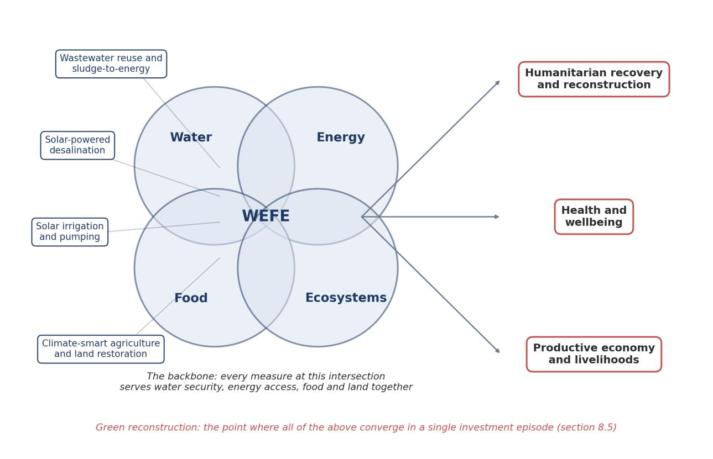
International support is the hinge on which this contribution turns. Chapter 4 establishes the equity basis of that claim; this chapter gives it operational content: the technologies SoP needs, the capacity it will build, and the finance that delivers the targets of Chapters 7 and 8. Every need stated here traces to a named, tiered, nationally endorsed action, and the support received against these needs is tracked through the transparency arrangements of Chapter 11.
SoP's technology priorities stand on a documented national foundation. The Technology Roadmap for the Implementation of Climate Action Plans, developed with the sector ministries and authorities, comprises sector case studies, a barrier identification and assessment, a policy assessment, financial and non-financial de-risking measures, technology factsheets, sector policy briefs, and a prioritization toolkit applied with each sector. The roadmap scored technologies against relevance to the Palestinian context, linkage to the NDC, co-benefits, acceptability, transferability, and occupation-related challenges, the last a scoring criterion in its own right. NDC 3.0 revalidates that analysis against the endorsed options: technologies matching a current tiered intervention carry forward with their barrier and de-risking analysis; renewable-powered desalination and large-scale wastewater treatment now carry the weight the endorsed priorities give them; and monitoring and measurement technology for the transparency system, early warning at Tier 1 across sectors, and smart-city and climate-resilient reconstruction technologies enter the roadmap for the first time.
SoP prefers decentralized, modular, and digital solutions, because fragmented infrastructure and restricted movement, the conditions section 5.1 describes, reward systems that can be deployed, maintained, and scaled without continuous access to a central node. Import restrictions and dual- use designations are a transfer barrier no market mechanism resolves, so technology transfer under this contribution includes facilitation of entry, certification and standards capacity, and the workforce that keeps transferred technology running. Each need connects to the cost envelopes and financing routes of section 10.3.
|
Sector |
Priority technology families |
Principal barriers |
Enabling response |
|
Energy |
Grid modernization and renewable integration; utility and rooftop solar; concentrated solar power; building efficiency; solar water heating |
Occupation control of the high-voltage network and land access in Area rendered as C; aging grid with high losses; immature off- take and net-metering rules; retrofit capital |
Transmission and distribution rehabilitation; smart grid monitoring and metering; clear off-take rules and guarantees; mandatory efficiency standards; installer capacity |
|
Water |
Wastewater collection, treatment and reuse; renewable-powered desalination at decentralized, scalable design; water resources monitoring; rainwater harvesting; leak detection technology |
Capital intensity; land and permitting constraints under occupation; energy intensity; restricted access to well and spring sites; destroyed plants in the Gaza Strip |
Phased decentralized and large-scale deployment; reuse standards; automatic monitoring serving adaptation and transparency simultaneously; dissemination programs |
|
Transport |
Hybrid and electric fleet with charging; public transport modal shift; inspection and fuel standards |
Import restrictions under occupation; an aging registered fleet; absent charging infrastructure; weak planning capacity |
Import and fiscal measures; charging rollout; vehicle inspection and age limits; route planning and operator incentives |
|
Waste and industry |
Sorting, recycling and composting; landfill gas management; industrial process measurement and electrification |
Source separation not yet implemented; municipal capacity and finance; absent process- emission data |
Source-separation schemes; operator training and results-based financing; facility-level measurement pilots feeding the inventory |
|
Agriculture Climate-smart and precision technologies; efficient irrigation; resilient fodder and conservation agriculture |
Land, water, and input access under occupation; upfront finance; entrenched practice |
In-field sensors and remote sensing; farmer extension and demonstration; concessional access finance |
|
|
Cross- cutting |
Multi-hazard early warning; smart-city and climate-resilient reconstruction technologies; MRV monitoring, measurement and data technology; AI- enabled analytics and remote sensing |
Fragmented hazard monitoring; destroyed monitoring infrastructure in the Gaza Strip; import restrictions on equipment; scale of destruction |
Integrated national early warning; reconstruction standards preventing restored vulnerability; the NDC implementation platform; proxy methods where access is restricted |
Artificial intelligence is a deliberate national choice, applied where it demonstrably reduces the data and delivery burden the occupation imposes and governed so that its own footprint stays small. SoP applies AI-enabled tools to remote sensing classification where physical access is denied, to gap-filling and quality control in the inventory, to forecasting within the early warning system, and to climate-health surveillance, and it applies them sustainably: models and processing are sized to the task and to the electricity constraint of section 5.1, deployment favors efficient and shared infrastructure over energy-intensive computation, data governance and protection standards apply throughout, and every AI-enabled tool is paired with the national capacity, under section 10.2 and the climate-education commitments of section 12.1, to operate and maintain it nationally. The intelligence layer serves the transparency system; it never substitutes for it.
Early warning stands as a technology priority in its own right. It appears at Tier 1 across most sectors of Chapter 7 and constitutes, taken together, SoP's principal means of averting and minimizing loss and damage. SoP structures its early warning needs on the four pillars of the Early Warnings for All initiative, risk knowledge, detection and forecasting, dissemination, and preparedness and response, aligned with Sendai Framework Target G and with the international financing mobilized toward universal coverage, an area where the national direct access capability of section 10.3 can be applied now. Reaching everyone is an operational requirement of the system: dissemination that does not reach women, children, displaced populations, and persons with disabilities does not function as early warning, and coverage is reported with the GESI disaggregation of Chapter 11.
These needs feed the support-needed reporting of the transparency framework. A full Technology Needs Assessment, structured on this basis, follows this contribution.
SoP builds capacity where the NDC requires it: in the institutions that carry reporting, in the technical functions that produce the numbers, in the readiness that converts direct access into finance, and in the inclusive capability that keeps no one outside the system. Every element is conditional on international support.
The institutional pillar rests on the standing arrangements of Chapter 6, on reporting continuity through standing teams, and on the statutory mandate advancing through the climate change bylaw described in Chapter 11. The technical pillar maps capacity to each NDC function, from inventory compilation to platform administration. Climate finance readiness starts from a changed position: with the first national direct access entity accredited, the task is no longer to obtain access but to operationalize and broaden it. Inclusive and Gaza-sensitive capability treats gender capacity and disaggregated data as system requirements, and keeps institutions in the Gaza Strip inside every national process while access is denied. The priority needs, each traceable to the national capacity- building needs assessment:
|
Pillar |
Area |
Priority capacity need |
|
Institutional |
Legal mandate |
Operationalize the climate change bylaw's reporting obligations, assigned focal points, frequencies, data standards, and escalation once enacted |
|
Institutional |
Standing coordination |
A permanent climate coordination function with reporting oversight authority, replacing project-based arrangements |
|
Institutional |
Reporting continuity |
Reporting teams of at least three per institution, structured induction and handover, and engagement of early-career professionals |
|
Institutional |
Technology coordination |
A national mechanism linking ministries, research institutions, the private sector, utilities, municipalities, and Gaza Strip institutions |
|
Technical |
Inventory compilation |
IPCC 2006 Guidelines and 2019 Refinement capability at PCBS with EQA; key category and uncertainty analysis; movement beyond default methods; extension to transport and industrial processes |
|
Technical |
Modeling and prioritization |
Nationally held LEAP-based scenario modeling; vulnerability assessment maintenance and updating with native hazard classification |
|
Technical |
Sector MRV |
Sector MRV functions in energy, transport, water, waste, agriculture, and industry, with standard templates on the annual cycle |
|
Technical |
Verification and reporting |
Consolidation and quality control at EQA, internal and secondary review, and BTR preparation as a standing function on a fixed calendar |
|
Technical |
Platform and data systems |
System administration, data architecture, security, and user support for the NDC implementation platform, with metadata standards |
|
Finance readiness |
Direct access |
Pipeline development, fiduciary, safeguards, and reporting capability in the accredited national entity; the NDA relationship; assessment and nomination of further national entities with broader sectoral coverage |
|
Finance readiness |
Proposal development |
Concept note and funding proposal capability at the standard the dedicated funds apply, including climate rationale and investment criteria, with gender assessment and action plans integral to every proposal |
|
Finance readiness |
Budget tagging Climate budget tagging and expenditure tracking at the Ministry of Finance and Planning, applied with gender-responsive budgeting and distinguishing loss and damage response from preventive adaptation expenditure |
|
|
Finance readiness |
Transparency financing |
Access to transparency and readiness resources so the reporting system is funded as a permanent function |
|
Inclusive and Gaza- sensitive |
Gaza data recovery |
Remote sensing, proxy estimation, and partner-verified data methods where monitoring infrastructure is destroyed or access is denied; re-establishment of monitoring as conditions allow |
|
Inclusive and Gaza- sensitive |
Gaza institutional continuity |
Maintained reporting capability within Gaza Strip institutions under displacement, damage, and staff loss; reconstruction readiness so rebuilding does not restore pre-existing vulnerability |
|
Inclusive and Gaza- sensitive |
Gender capability |
Gender units in sector authorities; gender-responsive planning and monitoring; formal inclusion of the women's and youth institutions in the reporting architecture; intersectional GESI analysis capability feeding sector targeting and budgeting |
|
Inclusive and Gaza- sensitive |
Disaggregated data and accessibility |
Routine sex, age, and disability disaggregation across five criteria in statistical instruments and reporting templates; accessibility and reasonable accommodation across consultations, information systems, and early warning |
Capacity building continues through the channels already operating, including support under the Climate Action Enhancement Package, builds on the gender-responsive capacity development program prepared under the technology roadmap effort, and extends in this cycle to the digital and AI-enabled MRV tools the transparency arrangements adopt. Capacity that unblocks a Tier 1 priority outranks capacity that improves a general function.
The finance case of this chapter rests first on entitlement: as a non-Annex I developing country Party, Palestine accesses international climate finance as of right, before any of the circumstances that determine its scale of need. Climate finance is the binding constraint on this contribution and the near- and mid-term emphasis of its means of implementation. The National Stocktake identifies finance as the most binding constraint on implementation and records the disconnect this chapter and Chapter 11 together close: without budget tagging and a national framework, results could not be linked to the resources that produced them, and flows remained fragmented, externally managed, and weakly connected to national systems.
The contribution is costed at measure level. The endorsed portfolio is priced in constant 2025 United States dollars, drawing on national data, international benchmarks, and reference technology cost trajectories on a conservative basis, under both structural scenarios, with declared accuracy bands; the methodology, assumptions, and complete costed portfolio are documented at measure level30. The envelopes cover capital expenditure with accrued operating costs; replacement cycles and enabling costs are treated in the costing methodology. The envelopes carry the climate pathway itself: the cost of implementing the endorsed mitigation and adaptation measures, and for the Gaza Strip only the incremental cost of making reconstruction green and resilient, priced as increments above standard reconstruction. Reconstruction itself is financed and tracked through the national recovery frameworks and is not part of this ask, consistent with the additive conditional layer of section 8.5.
The investment need of the NDC period is USD 8,694.9 million to 2035, approximately USD 869 million per year over 2026 to 2035, and USD 18.8 billion over the full pathway to 2050. All figures are the Status Quo pathway, the accounting reference per Chapter 4; the Independence pathway carries its own costed envelope, documented at measure level with the complete portfolio. Of the total to 2035, mitigation carries USD 4,905.7 million and adaptation USD 3,789.2 million. The sectoral distribution is presented with the two objectives combined, because the endorsed measures repeatedly serve both: solar-powered water infrastructure, wastewater reuse, and climate-smart agriculture carry mitigation and adaptation value in one asset, so the combined envelope is the meaningful planning figure for a sector, while the mitigation and adaptation totals remain separately stated and separately accountable.
|
Sector |
Investment Need |
|
Energy |
3,387.1 |
|
Water |
1,253.3 |
|
Transport |
1,118.7 |
|
Industry |
755.6 |
|
Solid Waste |
569.3 |
|
Health |
605.8 |
|
Agriculture |
276.2 |
|
Urban Planning and Infrastructure |
219.0 |
|
Ecosystems |
166.4 |
|
Coastal and Marine Environment |
154.3 |
|
Food |
77.8 |
|
Tourism |
28.6 |
|
Total |
8,694.9 |
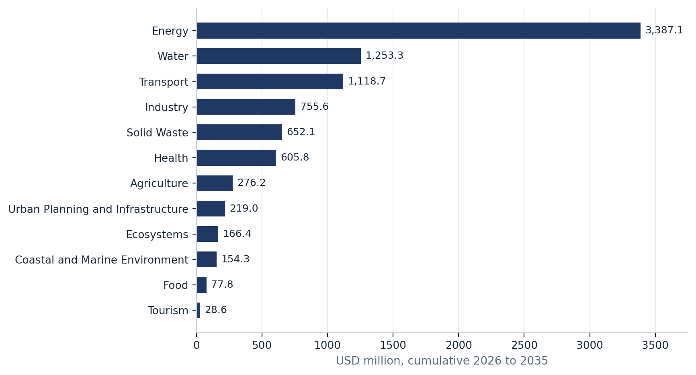
The costs carry the occupation premium of constrained logistics, decentralized delivery, and import restrictions, or, for Gaza reconstruction measures, the reconstruction multiplier, the two applied exclusively so that no measure carries both.
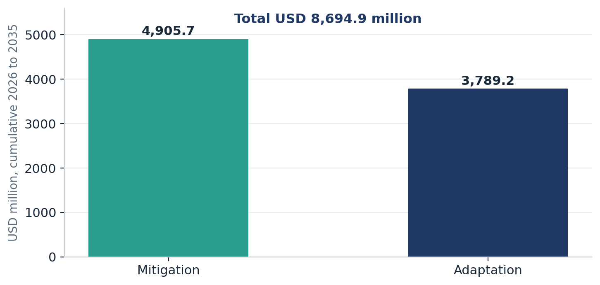
Sector attribution follows asset ownership, so solar-powered water infrastructure is carried under the water sector's envelope, on its mitigation side.
Every element of these envelopes is conditional on international climate finance, on the basis Chapter 4 and section 8.2 establish: conditionality is a characteristic of the targets, domestic co- financing exists and is reported through the arrangements of Chapter 11, and no target is deliverable without confirmed international support. The envelopes are gross investment needs, and part of them is structured for private capital. Electric vehicle purchase capital, residential solar water heating, industrial co-processing, and, under the Independence pathway, natural gas development contingent on sovereignty over national resources are commercially financed measures carried inside the totals, making private investment one of the financing sources of this contribution. Mobilization runs through four channels, the dedicated climate funds, the multilateral development banks, bilateral partners, and private and commercial capital, with blended structures applied where a measure generates the revenue or avoided-cost stream to support them.
The architecture through which finance is mobilized, governed, and tracked is national and already moving. The NDC implementation platform described in Chapter 11 carries the climate finance elements: tagging and expenditure tracking, donor mapping matched to the endorsed priorities, support-needed and support-received reporting, and the loss and damage streams, so finance coordination, prioritization, and accountability operate through one national system. Access barriers are a tracked matter within it, since several are consequences of the occupation itself. The Gaza Green Recovery Window is the dedicated channel through which reconstruction finance meets the green reconstruction conditionality of section 8.5.
Direct access changed materially in this cycle. In March 2026, during the aggression, the Green Climate Fund Board accredited the Municipal Development and Lending Fund as SoP's first national direct access entity, with EQA as National Designated Authority31. The accredited mandate covers local infrastructure and services, so broadening national accreditation is a capacity priority under section 10.2. SoP acceded to the Adaptation Fund in April 202632 and will originate a first national pipeline through it, and it positions for the Fund for responding to Loss and Damage through the loss and damage element below. The Global Environment Facility (GEF) is accessed through its implementing agencies with EQA as national operational focal point, complementing the direct- access channels of the GCF and the Adaptation Fund. Private-sector climate finance grows through the green finance instruments in the Industry priorities and through national investment-readiness work, building on the national handbook for private sector access to the Green Climate Fund prepared under the earlier readiness effort as an extension to the Operational Manual for the National Designated Authority of State of Palestine to Green Climate Fund
Carbon markets and Article 6 are a longer-term consideration, held deliberately at lower priority: the domestic conditions a functioning market instrument requires do not presently hold. The exploratory carbon-pricing and ITMO positioning of the previous cycle is retained as an option, with its data foundations carried in the inventory improvement plan so the door remains open.
Loss and damage is a distinct, detailed element of the finance function. SoP nominated a national focal point under the UNFCCC in the previous cycle, and this contribution updates the position with an assessment of scale and scope grounded in the destroyed-assets record of section 5.1.5 and the accounting gap it exposed: climate-relevant assets already financed and delivered were destroyed without being captured as climate loss and damage. A dedicated loss and damage financing window is under development within the national climate finance architecture, paired with the loss and damage budget tagging capability on the improvement pathway, so that SoP can evidence its claim on dedicated loss and damage finance, including through the Fund for responding to Loss and Damage, to which SoP acceded in June 2026, with the tracking design set out in section 11.2.
SoP tracks what it can credibly influence and measure, and commits to be verified on it. For many conditional actions, implementation waits on confirmed international support, so the national framework tracks selection, progress, and support with equal rigor. This capability is the fourth factor of the ambition case in section 8.4: a State that builds the means to measure, report, and be reviewed under the conditions section 5.1 describes raises the credibility of every other element it puts forward, and it is this capability that makes a fully conditional contribution investable. Reporting is half of implementation governance; the other half is delivery. Following submission, SoP's first priority is to translate this contribution into sectoral NDC implementation action plans and a national investment plan, with implementation roles assigned across government, sector institutions, and partners, and coordinated through the same standing structure that carries reporting. The enabling environment for that delivery, the institutional mandates, the legal instrument, and the finance readiness, is built through Chapters 6 and 10 and this chapter together, and progress against the implementation plans is tracked through the framework below, so planning, delivery, and accountability run through one system33. The precise scope of these arrangements and their linkage to SoP's first Biennial Transparency Report will be confirmed with the EQA.
The architecture below governs delivery as well as reporting. The implementation functions and the national machinery that carries each:
|
Implementation function |
National machinery |
|
Coordination of delivery NCCC steering; EQA as national coordinator; the eight Technical Working Groups as the standing sectoral delivery mechanism, the same bodies that carry reporting |
|
|
Partners, roles, and responsibilities |
Sector institutions as measure owners; municipalities and the accredited national direct access entity as delivery channels; private investors for the commercially financed layer; workers, women's, youth, and civil society institutions; international partners through the finance and technology channels |
|
Enabling institutional and policy environment |
The climate change bylaw and statutory mandates; standing coordination and reporting continuity; climate finance readiness |
|
Post-submission instruments |
Sectoral NDC implementation action plans and a national investment plan, the first priority following submission, prepared through the Technical Working Group machinery |
|
Tracking, monitoring, and evaluation |
The indicator framework, the annual data flow, finance tracking, and the NDC implementation platform |
The MRV architecture operates the institutional structure of section 6.1 as a reporting system. EQA coordinates as national focal point and custodian of the framework, PCBS compiles the national GHG inventory under national statistical standards, and the sector institutions convened through the eight Technical Working Groups report through standing teams of at least three members per institution, so that continuity survives turnover.
The architecture builds on foundations already in place. A national MRV system pilot was institutionally hosted at EQA in 2023, the PCBS greenhouse gas inventory series covers 2006 to 202234, and the national disaster loss database has been maintained since 2013. The task of this cycle is consolidation: connecting these systems, placing them on standing institutional footing, and extending their coverage. The legal dimension advances in parallel. A climate change bylaw is being prepared as secondary legislation under Environmental Law No. 7 of 1999, giving statutory weight to the reporting obligations, data-sharing arrangements, and institutional mandates of this chapter and carrying forward the legal-mandate priority of section 5.2.3. Enactment converts participation from cooperation to obligation.
SoP reports under the ETF as a developing country Party and applies the flexibility provisions deliberately, with every invocation recorded. Where a gap exists, the framework documents the gap, its cause, and the flexibility invoked, and indicates how and when the gap is expected to close, because a transparently documented constraint is a stronger position than an unsupported estimate. Many of the gaps recorded will trace to a single cause: data collection restricted by the occupation, monitoring infrastructure destroyed in the Gaza Strip, and territory over which national institutions are denied reach. Recording cause alongside gap is what distinguishes a capacity constraint from an imposed one.
Two reporting commitments go beyond what the framework requires. Reporting is disaggregated between the West Bank and the Gaza Strip, so the position in the Gaza Strip is never concealed inside a national average, and loss and damage is reported although the framework leaves it optional. The improvement pathway is itself a reported commitment: from predominantly default emission factors toward country-specific data, and from episodic, donor-dependent reporting toward standing national systems, across the inventory, mitigation, adaptation, loss and damage, and climate finance35.
The reporting calendar is anchored to the Biennial Transparency Report cycle as a standing government function, fed by the national annual cycle of section 11.3. SoP's reporting record comprises the Initial National Communication of 2016 and the First Biennial Update Report of 2021; the first Biennial Transparency Report is outstanding, and the Biennial Update Report provides the methodological starting point for its inventory and mitigation content.
Five questions remain answerable under any access conditions, and SoP tracks all five. Which options were considered and selected, what metrics track their progress, what funding was received and deployed against that progress, whether the legal and policy mandate for reporting is advancing, and whether the tracking framework itself performs. The endorsed, tiered option set of Chapters 7 and 8 and its documented selection method answer the first; the indicator framework answers the second; the finance tracking arrangements of section 11.3 answer the third. The fourth is tracked as progress on the enabling environment, including the reporting mandate under the climate bylaw and the obligations of the Enhanced Transparency Framework and the biennial transparency report cycle. The fifth is tracked as the coverage, timeliness, and completeness of the framework itself, reported annually so that the health of the system is visible alongside the results it carries.
Outcome indicators run against the sector targets of Chapters 7 and 8, implementation indicators against the delivery of each priority action, and support indicators against the finance, technology, and capacity received. Non-GHG indicators accompany every mitigation sector, and every sectoral indicator set is GESI-disaggregated by sex, age, and disability where the data pathway exists, with the minimum GESI indicator set of the national gender, equality, and social inclusion analysis adopted as the floor. The disaggregated-data capability this requires is itself a tracked capacity need under section 10.2.
Loss and damage is tracked as its own domain, distinct from adaptation, and follows the five thematic areas recognized under the Warsaw International Mechanism: slow onset processes, principally salinization, land degradation, rising temperature, and sea level rise on the Gaza Strip coast, assessed on a multi-year cycle; non-economic losses, including cultural heritage and community cohesion, to be scoped with the responsible ministries; discrete climate events, recorded through the national disaster loss database and consolidated annually; climate-induced human mobility; and the action and support directed at addressing loss and damage, tracked alongside the climate finance pillar. The destroyed-assets record of section 5.1.5 is the opening entry of the national account. One boundary is applied strictly and disclosed: the aggression on the Gaza Strip has not altered the climate hazard, but it has transformed exposure and vulnerability, so the framework records a changed vulnerability baseline against which climate-attributable loss is assessed, and war damage itself is not reported as climate loss and damage. The budget-tagging distinction between expenditure responding to realized loss and adaptation expenditure preventing it is the capability that evidences SoP's claim on dedicated loss and damage finance, and it connects this tracking design to the finance element of section 10.3.
A four-stage national data flow assigns standing obligations from generation to reporting: collection by sector reporting teams in the first quarter of each year, consolidation by EQA in the second, quality control and verification across the second and third, and national reporting and review in the fourth. An annual frequency is what sector institutions can sustain, and each sector reports once, through a single per-sector return tagged mitigation, adaptation, or both, since most Palestinian measures deliver both.
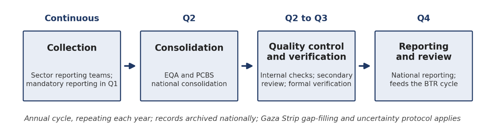
Quality assurance follows the phased GHG inventory improvement plan of section 8.1: completeness and consistency checks, cross-sector comparison, key category analysis by level and trend, and documentation as part of the method, with data sources, assumptions, recalculations, and version histories archived nationally so the work survives personnel change. Verification is distinct from quality control and follows a defined chain: internal checks by sector compilers, secondary review, formal verification, and the ETF technical expert review at international level, with a dedicated gap-filling and uncertainty protocol for the Gaza Strip given lost and estimated data.
Finance tracking closes the loop between results and resources. Climate budget tagging and expenditure tracking under the Ministry of Finance and Planning cover domestic public finance, applied together with gender-responsive budgeting so that inclusion commitments acquire a budget line. External finance is tracked through the national Aid Information Management System, and all reported climate finance demonstrates its relevance by identifying the NDC target supported, the action implemented, and the indicator influenced, classified as direct climate finance, climate- relevant finance, or non-climate finance.
The NDC implementation platform under development holds these systems together. Building outward from the MRV instance hosted at EQA and integrating with the statistical, disaster loss, and aid information systems already operating, the platform consolidates the elements of NDC implementation in a single digital home: the inventory workspace, mitigation and adaptation tracking against the endorsed priorities, climate finance tagging and support reporting, the loss and damage streams, and a public information layer through which targets, progress, and support received are visible to the public. It is hosted with the Ministry of Telecommunication and Information Technology and holds institutional memory independently of individual posts. Monitoring in the Gaza Strip and other access-restricted areas operates through the data recovery protocol, remote sensing, and partner-verified datasets, because the framework is built for restricted access. The construction and operation of these systems are conditional on international support, on the basis Chapter 4 establishes.
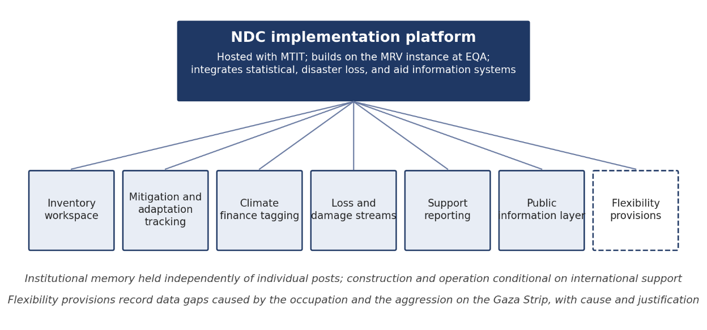
Climate action in SoP is carried by people whose exposure, capacity, and voice differ sharply. This chapter presents the commitments that address them: Action for Climate Empowerment under Article 6 of the Convention, and the alignment of this contribution with the Sustainable Development Goals.
Education, training, public awareness, public participation, public access to information, and international cooperation: SoP's commitments cover all six ACE elements, grounded in the national gender, equality, and social inclusion analysis and in the machinery this contribution built. International cooperation runs through the partnership architecture of Chapter 6 and the support channels of Chapter 10; the remaining elements are carried in the four areas below.
Women are almost half of the Palestinian population, and their climate vulnerability is structural, produced by care responsibilities, household water and energy management, concentration in unpaid family labor and informal agricultural work, protection risks under displacement, and the growth of women-headed households through the aggression on the Gaza Strip. The GESI analysis traces these pathways hazard by hazard: heatwaves fall hardest on pregnant women, older persons, and outdoor workers; drought and reduced rainfall fall on women farmers, smallholders, and pastoral communities; water scarcity multiplies the unpaid burden of securing household supply.
SoP's gender and climate work predates this cycle. Under earlier readiness support SoP produced a gender in climate change policy note, a national gender mainstreaming toolkit, gender-sensitive sector policy briefs, and a gender-responsive capacity development program, and the previous contribution carried gender as its empowerment focus on that foundation. This cycle extends the foundation from policy to delivery. The commitment covers gender equality and social inclusion in full, grounded in the GESI analysis and the three-pillar gender, youth, and social inclusion framework of the national process, and it operates through the distributed measures of section 7.1.5, the mandatory cross-cutting requirement applied in every sector, the gender-disaggregated indicators of Chapter 11, and the standing and measurement that allow implementation to be seen. Disaggregation applies five criteria, women, youth, persons with disabilities, older persons, and children, with disability recorded by type where data quality permits, and intersectional analysis capability is a capacity need under section 10.2 so overlapping vulnerabilities translate into sector targeting and budgeting decisions. Representation of women in climate institutions remains low; SoP tracks it under the participation indicator of the minimum GESI set and commits to report the movement. Gender-responsive budgeting attaches the commitment to the national budget through the finance arrangements of Sections 10.3 and 11.3, so inclusion acquires a budget line.
Children and youth carry the demographic reality of section 3.1.2: children under eighteen are approximately 43 percent of the population, and 44 percent of the population of the Gaza Strip, and it is their exposure to climate-sensitive livelihoods that is highest and their stake in the 2050 trajectory that is longest.36 Child-sensitive design applies across the health, water, and shelter adaptation measures per the GESI analysis, and children's specific exposure to heat, unsafe water, and disrupted services is tracked through the health and WASH indicators of the minimum GESI set.
Climate education is carried in the endorsed health-education priority and extended through curricula development that integrates disaster preparedness and risk reduction, so that education serves the early warning and response system of section 10.1 as well as the classroom, and it extends to the digital and data skills, including foundational AI literacy, that the transparency and early warning systems of this contribution will employ. Youth networks hold a standing channel into the Technical Working Groups, and the climate workforce training priorities in tourism and energy connect young graduates to the green employment the transition creates.
Workers are both an affected group and evidence holders, and the national process treated them as such. The Palestine General Federation of Trade Unions submitted its vision on climate change and just transition together with sector papers covering energy, health, tourism, transport, agriculture, and water, calling for decent green employment, green-skills training and reskilling, occupational safety and health protection under heat stress and water scarcity, extension of social protection to informal, seasonal, and platform workers, wage protection during climate-related reductions in working hours, and the formal participation of unions in sectoral planning and decision-making.
SoP commits to just transition safeguards in NDC implementation on this basis. Workers' representatives participate in the sectoral planning the Technical Working Groups carry; occupational safety and health protocols for heat stress and water scarcity are strengthened in the climate-exposed sectors; green-skills development is a capacity priority under section 10.2; and workers reached by livelihood protection, reskilling, or green-job support are tracked under the just transition indicator of the minimum GESI set, disaggregated by sex, age, and disability. Climate finance proposals developed under section 10.3 apply decent-work criteria alongside the gender criteria the funds require.
Public awareness, participation, and access to information operate through the machinery Chapter 6 documents and this contribution makes permanent: the whole-of-government and whole-of- society consultation architecture with its GESI-responsive channels, dedicated sessions and minimum participation thresholds for persons with disabilities, community-based channels for older persons and displaced people, and safe hybrid engagement that keeps the Gaza Strip inside every national process while access is denied. Public access to climate information is delivered through the public information layer of the NDC implementation platform, which reports targets, progress, and support received, with accessibility standards applied to the platform itself.
Standing representation for the Ministry of Women's Affairs, youth institutions, representative organizations of persons with disabilities, and workers' representatives is carried in the implementation and review mechanisms of this contribution, and their participation is measured and reported annually under the arrangements of Chapter 11.
Inclusive process design is a standing commitment. The GESI consultations that shaped the priorities, held with women, children and youth, persons with disabilities, older persons, and workers, become the model for implementation-phase engagement, and accessibility and reasonable-accommodation requirements extend to consultations, information systems, early warning, and the adaptation projects themselves: accessible WASH and shelter, inclusive evacuation planning, and backup power for assistive and medical devices, per the GESI analysis.
The commitments of this contribution advance the 2030 Agenda directly, and the alignment is presented so that every climate priority can be read as the development priority it also is.
|
Sustainable Development Goal (SDG) |
Where this contribution delivers it |
|
SDG 2, Zero Hunger |
Food sector priorities: climate-resilient food systems, strategic reserves, drought- and heat-tolerant crops, food sovereignty; climate-smart agriculture |
|
SDG 3, Good Health and Well-being |
Health sector priorities: climate-health surveillance, heat response, disease control, mental health and psychosocial support |
|
SDG 6, Clean Water and Sanitation |
Water and Wastewater priorities: reuse scale-up, non-revenue water reduction, desalination, WASH reconstruction |
|
SDG 7, Affordable and Clean Energy |
Energy priorities: renewable scale-up, distributed generation, efficiency, energy access in reconstruction |
|
SDG 11, Sustainable Cities and Communities |
Urban and Infrastructure priorities: green building standards, drainage and flood protection, nature-based urban resilience, green reconstruction |
|
SDG 13, Climate Action |
The contribution in full: targets, adaptation program, MRV framework, and their integration into national policies and capacity building |
|
SDG 15, Life on Land |
Terrestrial Ecosystems priorities: reforestation and afforestation, rangeland restoration, biodiversity protection, ecosystem restoration |
|
SDG 17, Partnerships for the Goals |
Means of implementation: the NDC implementation platform, direct access, technology transfer, and the partnership architecture of Chapter 6 |
Trade-offs are managed, never denied. Where climate action and development priorities create tension, reconstruction speed against green reconstruction standards, land protection against livelihood expansion, water reallocation between agriculture and household supply, the nexus discipline of Chapter 9 governs: options are selected and sequenced so that neither objective is purchased by hardening the other's exposure, and the trade-off, where it remains, is stated openly in the sector plan.
The table below provides the information required under Decision 4/CMA.1, Annex I, in full, so that SoP’s complete ICTU response can be located in one place. Entries drawing on settled positions elsewhere in this contribution state them in place.
|
ICTU element (Decision 4/CMA.1, Annex I) |
Information provided by the State of Palestine |
|
1. Quantifiable information on the reference point |
|
|
1(a) Reference year, base year, reference period |
2022, the most recent complete national GHG inventory year. |
|
1(b) Quantifiable information on the reference indicators, their values |
National total GHG emissions in 2022: 6,483.71 ktCO2e per the published PCBS national inventory, stated on IPCC Second Assessment Report GWP values; this is the official national reference value.37 The modeled 2022 base of 6,114.9 ktCO2e is a recalculation of that inventory performed for this contribution on the LEAP-PAL 2050 platform, applying AR6 GWP-100 values and methodological improvements, principally in wastewater treatment, reported as an accuracy improvement maintaining methodological consistency per Decision 4/CMA.1 Annex II paragraph 2(d). The pathways and targets are computed on the modeled series; the relationship between the two values is disclosed here and held fixed across the contribution. Business as usual reference values, the reference indicator at the target years: 9,979.6 (Status Quo) and 10,820.8 (Independence) ktCO2e at 2035; 10,836.4 and 12,651.8 ktCO2e at 2040. |
|
1(c) Strategies, plans, actions for Article 4, paragraph 6 (where applicable) |
Not applicable; the reference is quantified. |
|
1(d) Target relative to the reference indicator |
Emissions level in the target year expressed as a percentage reduction below the business as usual projection, under each of the Status Quo and Independence pathways (Chapter 8). For accounting and tracking, the Status Quo target is the reference indicator, with Independence communicated as the higher level of ambition achievable were structural conditions to change. |
|
1(e) Information on data sources |
PCBS national inventory; sector activity data per section 6.1.1; LEAP-PAL 2050 modeled series for projections. |
|
1(f) Circumstances for updating reference values |
Reference values may be updated for changes in the national inventory or improvements in accuracy that maintain methodological consistency, per Decision 4/CMA.1 Annex II paragraph 2(d), reported transparently under the arrangements in Chapter 11. |
|
2. Time frames and periods for implementation |
|
|
2(a) Time frame and/or period for implementation |
From submission to 31 December 2040. NDC target year 2035; extended target year 2040, aligned with the NDC 2.0 target year and the horizons of national sectoral strategies. |
|
2(b) Single-year or multi- year target |
Single-year targets at 2035 and at the extended target year 2040. |
|
3. Scope and coverage |
|
|
3(a) General description of the target |
Emissions-level targets below business as usual under two national pathways, fully conditional on international support, on the coverage stated in 3(b) and moving toward economy-wide coverage per 6(d); adaptation targets across twelve sectors. |
|
3(b) Sectors, gases, categories, pools covered |
IPCC categories: Energy, including transport; Waste; AFOLU in part, with the cropland and livestock subcategories estimated in the 2022 base-year inventory; IPPU enters the projections from 2026. Land- based removals from afforestation, agroforestry, and rangeland restoration are not estimated in the base-year inventory and enter the pathway projections and target accounting, an asymmetry stated rather than netted out, mirroring the IPPU treatment. Gases: CO2, CH4, N2O. Expressed through the national policy lens, the mitigation sectors are Energy, Transport, Waste, Agriculture, Industry and Water. Territorial coverage: the Occupied Palestinian Territory on the 4 June 1967 reference. |
|
3(c) How paragraph 31(c) and (d) of decision 1/CP.21 was taken into consideration |
Categories are included on a continuing basis per Annex II paragraph 3(b); categories excluded from the accounting boundary are stated and explained per Annex II paragraph 4 in section 2.3, including the treatment of imported electricity under territorial accounting. |
|
3(d) Mitigation co-benefits of adaptation actions and economic diversification plans |
Presented in Chapter 9: mitigation and adaptation options were assessed with their co-benefits in view, WEFE-nexus measures carry combined resilience and abatement value, maladaptation screening protected mitigation outcomes, and green reconstruction is the converging case (Chapter 9; section 8.5). Economic diversification is addressed through the green jobs and just transition commitments of section 12.1.3. |
|
4. Planning processes |
|
|
4(a) Planning processes, institutional arrangements, public participation, engagement |
Chapter 6: national architecture ending in Cabinet endorsement, eight sector Technical Working Groups, whole-of-government and whole-of-society consultation with GESI-responsive channels, including hybrid engagement for the Gaza Strip. National circumstances per Chapters 3 and 5; green reconstruction as contextual priority per Chapters 4 and 8. |
|
4(b) Specific information for joint action (where applicable) |
Not applicable. |
|
4(c) How preparation was informed by the global stocktake |
The national stocktake and this contribution’s ambition framing respond to the outcomes of the first global stocktake: emissions held below business as usual under both structural conditions38, renewable energy scale-up as the largest source of deliverable abatement, a transition pathway that deepens as constraints lift, and adaptation elevated as the overriding national priority (sections 7.1 and 8.4). |
|
4(d) Adaptation actions and plans with mitigation co-benefits |
Chapters 7 and 9. |
|
5. Assumptions and methodological approaches |
|
|
5(a) Approaches for accounting for emissions and removals corresponding to the NDC |
IPCC category-based territorial accounting, consistent with decision 1/CP.21 paragraph 31 and the accounting guidance of Decision 4/CMA.1 Annex II; one boundary governs the base year, the reference cases and the target years. |
|
5(b) Approaches for accounting for the implementation of policies and measures |
LEAP-PAL 2050 platform; the scenario architecture per Chapter 4; measure-level implementation tracked through the indicator framework of Chapter 11. |
|
5(c) Use of existing methods and guidance under the Convention |
National inventory and reporting practice established through the Initial National Communication and the First Biennial Update Report is carried forward. |
|
5(d) IPCC methodologies and metrics |
IPCC 2006 Guidelines for National Greenhouse Gas Inventories. The GWP treatment and the published-to-modeled relationship are stated at 1(b); reporting under the Enhanced Transparency Framework applies AR5 GWP-100 per Decision 18/CMA.1, and an AR5-consistent restatement of the reported quantities accompanies the Biennial Transparency Report. |
|
5(e) Sector-, category- or activity-specific assumptions and methods |
Section 8.1. Sector-, category- and activity-specific assumptions follow the methods of section 8.1, applied on the LEAP platform under the IPCC 2006 Guidelines with AR6 GWP values; the endorsed sector targets and non-GHG indicators of section 8.3 carry the sector-level assumptions, with technology cost assumptions per Chapter 10. |
|
5(f) Other assumptions and methodological approaches, including construction of the baseline |
Business as usual is constructed on the LEAP platform from the modeled 2022 base stated at 1(b); the modeled series is benchmarked against the published inventory record, and alignment between the two will be maintained and reported under the arrangements in Chapter 11; war-related disruption is represented through explicit, time-bound shock and recovery assumptions rather than normalized into the baseline; two reference cases are reported, one per pathway. |
|
5(g) Intention regarding voluntary cooperation under Article 6 |
Palestine states a forward interest in voluntary cooperation under Article 6, conditioned on the governance, data and MRV readiness carried in the inventory improvement plan and Chapter 11; engagement is a longer-term consideration per section 10.3. |
|
6. How the Party considers its NDC fair and ambitious |
|
|
6(a) Fair and ambitious in the light of national circumstances |
The State of Palestine contributes a negligible share of global annual emissions and contributes under occupation, war and reconstruction pressure; the full case, including the treatment of suppressed demand and recovery held below its own counterfactual, is in section 8.4. |
|
6(b) Fairness considerations, including equity |
CBDR-RC per Chapter 4, grounded in Article 3.1 and Articles 4.3 to 4.5 of the Convention; conditionality attaches to the target as a structural fact. |
|
6(c) How Article 4.3 (progression) is addressed |
Progression demonstrated on the absolute level put forward, on scope and coverage, and on time frame (sections 2.2 and 8.4). |
|
6(d) How Article 4.4 (economy-wide targets over time) is addressed |
Movement toward broader coverage: a scored option pool of 72 options against 37 committed actions in NDC 2.0, water added as a mitigation sector, IPPU entering the projections from 2026, and the phased inventory improvement plan bringing industrial processes and the remaining AFOLU categories into estimation (sections 2.2, 8.1 and 8.3). |
|
6(e) How Article 4.6 (special circumstances of LDCs and SIDS) is addressed |
Not applicable; The State of Palestine is neither a least developed country nor a small island developing State. The special circumstances bearing on this contribution are the structural conditions set out in Chapter 5, reflected at 6(a). |
|
7. Contribution toward achieving the objective of the Convention (Article 2) |
|
|
7(a) How the NDC contributes to the objective of the Convention as set out in its Article 2 |
Contribution toward holding warming to well below 2°C and pursuing efforts toward 1.5°C, calibrated to national circumstances. Alignment is demonstrated through direction and structure: emissions held below business as usual under both structural conditions, a transition whose depth increases as constraints lift, measures selected for combined mitigation and adaptation value, and a green reconstruction principle preventing carbon lock-in through the largest investment episode in the national record (section 8.4). |
|
7(b) How the NDC contributes to Article 2, paragraph 1(a), and Article 4, paragraph 1, of the Paris Agreement |
The scenario architecture holds recovery below its own counterfactual and carries a long-term indicative trajectory to 2050 under which emissions continue to decline relative to business as usual as structural conditions permit, with successive contributions confirming and deepening it (Chapters 4 and 8). |